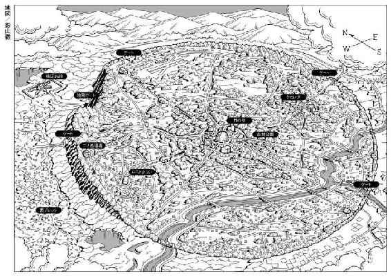

| NO.6 [ナンバーシックス] #06 | |
| あさのあつこ | |
| 講談社 (2011) | |
ebpaj-guide-1.0
ＮＯ．６
〔ナンバーシックス〕
＃６
あさのあつこ
ＮＯ．６〔ナンバーシックス〕＃６

おまえには何が見えているんだ、
シオン。
１ 何も知らずに心を
自分のやったことを憶い出すくらいなら、何も知らずに心を奪われていたほうがましだ。ああ、その音でダンカンをたたき起してくれ！ 頼む、そうしてくれ、出来るものなら！
（マクベス 第二幕 第二場 福田恆存 訳 新潮文庫）
風の音が聞こえる。
乾いた哀しげな音だ。
まさか......。
紫苑は足を止め、ゆっくりと瞬きをしてみた。暗い。暗みに慣れた目にさえ闇は闇としか映らず、ただ黒く塗りつぶされている。むろん、風など吹いていない。
ここは、地の底だ。
聖都市ＮＯ．６の抱え持つまさに闇の場所。矯正施設の地下だ。風が吹くわけがない。風音が聞こえるわけもない。それなのに、ヒューヒューと高く鳴る音を聞いた。束の間だったけれど、確かに耳にした。
ついこの前まで暮らしていたＮＯ．６の内側で聞いた音ではない。豊かに茂る木枝を揺する風でもなければ、あまやかな花の香りを運んでくるものでもない。これは......。
廃墟の風だ。
西ブロックの片隅にある荒れ果てたホテルの残骸。そこを吹き抜ける風の鳴き声だ。
冷たい風だった。吹き付けてくるたびに骨の髄まで凍るような気がしたものだ。実際に、路上で倒れ動けなくなった老人や餓えて体力を失った子どもたちは、凍てついた風に晒され凍えて死んでいく。残酷で容赦ない冬の風なのだ。
それが懐かしい。
ＮＯ．６の何の害にもならない優しい微風より、廃墟に鳴り渡る凍てつく風のほうが何倍も懐かしい。
イヌカシはどうしているだろう。大きな鍋に残飯を煮込み、せっせと犬の餌を作っているだろうか。今日、儲けた金の勘定に忙しいだろうか。褐色の肌と漆黒の髪と瘦せた身体のイヌカシ。
赤ん坊を託した。小さな男の赤ん坊を無理やりおしつけた。
紫苑、いいかげんにしろよ。おれはホテルの経営をしてるんだ。慈善事業の孤児院を開いてるわけじゃない。
苦りきった顔が浮かぶ。
ごめんよ、イヌカシ。きみしか頼る者がいなかった。きみに縋るしか術がなかった。
ちっ。
イヌカシが舌打ちする。
どこまでも厄介なやつだよな、おまえって。わかった、預かる。おれだって慈悲の心ぐらいはあるさ。そう、犬も食わない慈悲心だけどな。しょうがねえ。おれの犬が必死で守った赤ん坊だ。放り出すわけにもいかねえし......おれも、つくづくアマチャンだよな。自分でも嫌になっちまう。
イヌカシ、感謝。
おまえさんに感謝されても嬉しかねえよ。何の得にもならないだろうが。紫苑、赤ん坊は預かる。ただし預かるだけだ。絶対に迎えにこいよ。おまえさんが拾ったんだ。おまえさんが育てろ。責任をちゃんととるんだ。いいな、必ず迎えに......。
「紫苑」
ネズミが振り向き、紫苑の名を呼んだ。
光沢のある灰色の瞳がはっきりと見てとれた。こんな暗闇の中でさえ、ネズミの瞳は光を吸い込み、光を放つ。それとも......と、紫苑は思いを巡らせた。
それともぼくは、たとえ光がなくても、一筋の光さえ差さない暗中であったとしても、この瞳を捉えることができるのだろうか。
「立ち止まるな。おれのすぐ後ろを歩くんだ」
「あ......うん。ごめん、ぼんやりしていた」
「ぼんやり？」
「風の音が聞こえた気がしたんだ。イヌカシの廃墟に吹き付ける風の......空耳なんだってわかってるんだけど......なあ、ネズミ」
「うん？」
「イヌカシ、今頃、何をしているかな」
ネズミが瞬きする。それから息を呑み込む気配がした。
「あんた、ほんと大物だな」
「え？」
「この状況下でぼんやりできるやつなんて、そうそういないぜ。緊張のあまり放心状態になる者はいくらでもいるけどな。まして風の音を聞いたり、のんびり他人さまのことを考えられるなんて神業だ。あんたは、神さまクラスの大物だよ。これからは毎日、朝夕に拝ませてもらおう」
「皮肉か」
「まさか。神さまに皮肉が言えるほどおれは胆が据わってない。本気で感服してるんだ。ただし」
腕を摑まれた。
痛い。
指が食い込んでくる。
一見、華奢にも思えるネズミの指にどれほどの力がこめられているか、よく知っている。幾度も腕を摑まれ、痛みに顔を歪めた。幾度も腕を摑まれ、引きずり上げてもらった。幾度も幾度も、数え切れないほど......死から生へ、絶望から希望へ、虚構から真実へ、この指のおかげで這い上がることができた。
「ここから先はもう少し臆病な小物になれ。イヌカシなんてどうでもいい。自分の身を守ることだけを考えるんだ」
「わかった」
「ほんとに......わかってんのか」
「わかってる、たぶん」
「たぶんね。あんたの『たぶん』ほど当てにならないものは、ないけど」
ふいにネズミが笑った。小さな、しかし愉快でたまらないという軽やかな笑い声だった。
「こんなところで、こんなときに、こんな会話を交わしている。暢気の極みだ、おれも。あんたといると、おれまで神さまの仲間入りができるらしい」
そこで口調が反転する。重く鋭くなる。指先にさらに力が加わる。
「何があってもおれから離れるな。自分の力でついてくるんだ。前にも言った。もう二度と言わない」
うなずく。
首を僅かに前に倒した紫苑の仕草が見えたのか、感じたのか、ネズミは背を向け再び歩き始めた。この背中はそう簡単には振り向いてくれない。それもよく知っている。
生きることに必死にならなければ、貪欲に生にしがみついていなければ、振り向いてはくれない。
ネズミは、暢気で鈍感な神を決して敬ったりしないのだ。
紫苑は一息、闇を吸い込むと足を前に出した。
岩の割れ目からやや上がりぎみに小道が続いている。大人が一人、やっと通れる程度の幅だ。コンクリートに固められ、豆電球が等間隔に並んだあの通路より、まだ狭いかもしれない。それほどの道のりではないけれど曲がりくねっている分、歩き難くもあった。
だけど......。
紫苑は手の甲で流れる汗を拭いた。
だけど、ここは血の臭いがしない。
あの通路に満ちていた血の臭いがしない。死んでいく、殺されていく何十という人々の呻きも悲鳴もない。
ただ、闇があるだけだ。
それが束の間のことであったとしても、今までがそうであったように闇の先に紫苑の想像を遥かに超える現実が待ち受けているとしても、とにかく人間が無慈悲に不条理に抹殺されていく臭いを嗅がなくてすむのだ。
ありがたい。砂漠で出会った沃地のように、ありがたい。
甘いな。
下唇を嚙みしめる。
ネズミに言われるまでもない。甘すぎる。
臭わないだけなのだ。聞こえないだけなのだ。壁に隔てられ、肉眼で見えないだけなのだ。
すぐ傍らに、ある。
人間が、生まれて間もない赤ん坊も含めて何十という人々が無慈悲に不条理に抹殺されていく現実が、紫苑の立っている場所と地続きのところで今、このときも確かにあるのだ。
臭わないからといって、聞こえないからといって、見えないからといって存在しないわけじゃない。オアシスにたどり着いたからといって、砂漠が消えうせるわけじゃないのだ。
甘いな。どうしても、ごまかそうとしてしまう。残虐を目の当たりにしたときの憤怒を忘れようとしてしまう。惨いものから目を逸らしたいと望んでしまう。うずくまって何も知らぬまま眠りこける心地よさに身を任せようとする。
甘い。そして、弱い。
岩の壁を手でなぞり、懸命にネズミを追う。
今はともかく彼を追うのだ。いや......ぼくはいつだって、彼を追い続けてはいるのだけれど。
西ブロックで初めて暗夜の道を歩いた。駆けたこともある。あの経験がなければ、圧し掛かり眼球そのものを押し潰すような闇を歩くことなど、とうてい不可能だったろう。
そういう意味では、ちょっぴり逞しくはなってるんだ。
自分に言い聞かす。信じろ。ぼくはぼくなりに力を蓄えている。自分自身を信じきれ。
自己嫌悪に陥ることも、挫折感に浸ることも、容易くはあるけれど意味はない。
自分を信じることは力だ。その力を糧として、武器として、乗り越えられる困難は数多ある。
紫苑は踏み出した足裏に意識を集中させ、一歩、一歩、進んでいった。
明かりに出会った。仄かな明かりだ。前方がぼんやりと明るんでいる。
ネズミの後ろ姿がその淡い光の中に滑り込んでいく。紫苑は足を速めた。
「あ......」
息を呑む。
広場に出た。さっきネズミと砂色の男が戦った場所より、かなり広い。天井も高かった。三階建てぐらいの高さはありそうだ。周りをごつごつとした岩が囲っているのは同じだが。
もともと、ここは入り組んだ構造の巨大な洞窟だったんだよ。
ネズミはそう教えてくれた。だとしたら、自然の造作した広場ということになる。その岩場のあちこちに蠟燭が灯っていた。蠟燭だけではない。ランプの明かりも瞬いていた。どちらも微かな、しかし温かな光だ。美しくもある。岩場に咲く、小さな炎色の花のようだ。
岩場？
目を凝らす。息を詰め、ひたすら目を凝らす。さらに息を詰める。
影が動いた。
一つ、二つ、三つ、四つ......。鼠ではない。そんな小さな生き物ではなかった。幾つもの影が動いている。二本足で立って、何かをささやきあっている。二本足で立って、ささやいて......。
人間！
呑み込んだ息が喉につかえる。鼓動が激しくなる。
人間だ、人間がいる。岩場のあちこちから、ぼくたちを覗き込んでいる。人間だ。
さらに目を凝らすと、岩場に灯る蠟燭の後ろには、かなりの大きさの洞が口を開けている。洞窟の内にさらに洞穴があるのだ。そこから、人々は這い出してきたらしい。
紫苑の視力では、個別の姿を捉えられないけれど、背丈も体つきもまちまちだというぐらいは、何とか判別できる。
男も女も、大人も子どももいるのだろうか。いちように身を乗り出し、こちらを見下ろしている。見つめ続ければ、一人一人の目が鈍く光を放っているようにも思えた。
「ネズミ、この人たちは......」
「何だと思う？」
「あ......生き延びた人たちか。ぼくたちのように、死刑場から何とか逃げることができた人たち」
「ちがう」
ネズミがかぶりを振る。ネズミらしくない緩慢な動作だった。
「彼らは、ずっと以前からここに住んでいる」
「ずっと以前......それはどういう意味なんだ？」
「今に、わかる」
今に、わかる。そうか......そうだな。
今に、わかる。あんたに意志と力があればな。
紫苑はこぶしを握った。
問うのは容易い。ずっと問うてばかりいた。目の前に現れる現実を自分で読み解こうとする前に、いとも容易くネズミに正解を教えてくれとせがんできた。
もう通用しない。
自分で答えを探す。摑む。読み解く。たとえネズミであろうとも、他者は他者。他者の言葉に寄りかかっていては、真実は捉えられない。想像を超える現実と対峙できない。ネズミと対等ではいられない。
自分で捉えるのだ。
ネズミが紫苑から視線を逸らした。灰色の瞳が翳る。瞬き一つして、その翳りを払うと、ネズミは片手を滑らかに横に動かした。ネズミ独特の優雅な動きだった。
「見ろよ、豪勢じゃないか。総出で出迎えてくれてるぜ」
「きみは、ここでも有名人なんだ」
「......バカ、紫苑、あんたの出迎えじゃないか」
「ぼくの？」
「あんたが珍しいんだよ。ここに外の人間が闖入してくるなんて前代未聞だろうからな。しかも、ＮＯ．６の住人が、だ」
「元住人だ。今はちがう。ＮＯ．６のＩＤカードはとっくに捨てた。ぼくはもう、あの都市の市民ではない」
「拘るな。些細な言葉の綾じゃないか」
「拘る。ちっとも些細なことじゃない。きみが思っているほど、ぼくは弱くない。ＮＯ．６に囚われているわけじゃないんだ」
少し虚勢が入っているかもしれない。それでも紫苑はせいいっぱい、胸を張ってみせた。
ぼくは弱い。精神も肉体もあまりに脆い。しかし、決意は揺るがない。想いは惑わない。
聖都市の内側でなく、外側で生きるのだという決意、きみと共に生きるのだという想いは、いささかも揺れることなく、惑うことなくあるのだ。
「あんたが弱いなんて、誰が言った？」
「きみがしょっちゅう言ってる」
「まさか。あんたは最強さ。さっき感服したばかりじゃないか。たいしたもんだって......今はもっと感心している。まったくね」
ネズミが肩をすくめる。
「まさか、こういう状態で、いちいち言葉尻を捉えて文句を言われるなんて思いもしなかった」
キチッ、キチッ、キチッ。
溝鼠が一匹、紫苑の身体を駆け上り、肩に座る。ハムレットやクラバットに比べるとかなり重い。そして、生臭い。でも、鼻の頭をうごめかせて、首を傾げる仕草はいっしょだ。もう一匹、反対側の肩に乗ってくる。そいつは紫苑の白髪に頭をつっこみ、頰ずりするように上下に動かした。さらにもう一匹、今度は小ネズミが足元に擦り寄ってくる。もう一匹、もう一匹。
鼠たちは、紫苑の身体を駆け上がり、駆け下り、甘えるように柔らかな鳴き声をたてる。
キチッ、キチッ、キチッ、キキキキキ。
チッチッチッ、チッチッチッ。
「おい、いいかげんにしろよ。ぼくは、滑り台じゃない。やめろったら。くすぐったいって」
紫苑が身体を揺する。
ざわりと空気が動いた。闇に漣がたつ。息を吸い込む音、聞き取れないささやき、身じろぎ、目配せ......岩場の住人たちの気配が伝わってくる。
「おもしろい子だ」
頭上から声がふってきた。低いけれどよく響く声だ。ネズミの歌ほどではないけれど深く心地よく耳に沁みる。さっきと同じ者の声だろうか。黒く塗りこめられた空間から降りてきた声。
「話を聞こう」あの一言と同じ声なのか。
見上げる。
岩場の中央、バルコニーのように張り出した部分に椅子に腰掛けた男の姿があった。
男......だと思う。長い裾のあるガウンのようなものを身につけ、頭髪も髭も長く白い老人......と見えた。薄暗くて、顔までは、はっきりと見通せない。
「おもしろい子だ。鼠たちに敵意も警戒心も抱かせないとはな。名前をたずねようか。名は何という」
「紫苑です」
「シオン......ほぉ、美しい名前だ」
「あっ......どうも、ありがとうございます。褒めていただいて。あの、あなたは？」
「わたしか？ わたしがどうしたね、シオン」
「あなたは何というお名前なのですか？」
ざわ、ざわ、ざわ。
闇の漣がさらに激しくなる。溝鼠が肩の上でキチキチと鳴いた。笑いが起こる。四方の岩場から、さまざまな笑い声がおこり、紫苑に降りかかってきた。
くすくすくす。
名前だって。
くすくすくす。
名前を聞いたよ。
くすくすくす。くすくすくす。くすくすくす。くすくすくす。
なぜ笑われるのか、見当がつかない。名前を聞いただけだ。それが、こんなにも失笑をかうことなのか。
くすくすくす。くすくすくす。
笑い声は止まない。
紫苑は横に並ぶネズミに顔を向けた。
ネズミは身じろぎもせず立っている。むろん、笑ってはいなかった。どんな表情も浮かんでいない。彫像のようだ。
「老」
深い声が笑いの漣を突き通して聞こえた。洞窟内の物音がぴたりと、止む。ふいに、風が凪いだ森でときおり出くわす痛いほどの静寂が訪れた。静寂の中、老人の言葉だけが緩やかに広がる。
「老。そう呼ばれている」
「ロウ......というお名前なのですね」
「どうかな。ただの老人という意味かもしれない」
「本名ではないと？」
数秒の沈黙。
「お若いの。ここでは名前などに拘る者はいない。誰もな......ネズミは、そう教えてくれなかったか」
そういえば。
紫苑は息を吐いた。
そういえば、ぼくはまだネズミの本名を知らない。
「老」
ネズミが動いた。一歩、前に出たのだ。
「話を聞いてもらいたい」
「聞こう」
老人が椅子の上で背筋を伸ばす。
「おまえは、ここに戻ってきた。二度と会わぬ者のはずが、再びわたしの目の前に現れた。その理由を聞こう」
「感謝する」
「感謝？ ネズミ、しばらく外の風にさらされて、すっかり軟弱になったようだな。しかし、いくら軟弱になったとはいえ、まさか、掟を忘れたわけではあるまい」
「むろん」
「ここから出ていった者は二度と戻ることは許されない。おまえはその禁を破った。償わなければならぬ」
「わかっている。罰は受けるさ。だから、話を聞いてくれ」
老人が指を鳴らした。
気がつかなかったけれど、椅子の脚は二本の長い棒にくくりつけられていた。椅子というより、輿に近いのかもしれない。
二人の男たちが棒をつかみ、輿ごと老人を持ち上げる。
脚が？
老人の着ているガウンの裾はまるで膨らみがなかった。だらりと垂れ下がっているだけだ。老人は膝から下の脚を失っている。両脚ともに、だ。
岩場を、老人を乗せた輿が壁をなめるように、ゆっくりと下り始めた。長い髪を一つに束ねた影、身体の輪郭から女だとわかる人影が、輿の前方を箒に似た道具を使って掃いている。露払いのようだ。
道が、人がぎりぎりすれ違える程度の幅がある道が、確かについているのだ。かなりの勾配になっているそこを、男たちはいささかも乱れることのない足取りで歩いている。
自然にできたものではあるまい。歩道が人の手によって、岩壁に穿たれている。よく確かめれば、道は岩壁に張り巡らされ、人々が自由に行き来できる構造になっているのかもしれない。
これは......街、なのか。
紫苑は改めて四方に視線を巡らせた。同時に思考をも巡らせる。
住居だろう大小の洞穴、岩壁の道、この広場、広場からさらに奥に続いているらしい黒い空間、何かを煮炊きしている匂いまで嗅ぐことができる。微かに、本当に微かだけれど風も感じる。空気が流れているということ、地上と繫がっているということか......。ここは人の住む街なのだ。
地下に、街がある？
千々に乱れようとする思考を制御する。まとめ、筋道を探す。
ネズミはこの闇の住人たちを『人狩り』から生き延びた人々とはちがうと言った。そうだろう。太陽の光の届かない地下世界とは、人が生きるにはあまりに過酷な状況ではないのか。人間とは本来、地上の暮らしに適応するようにつくられている生物だ。太陽光や気流、自然の変化のほとんどない場所で生き続けられるとは思えない。しかし、目の前には確かに人々がいて、人々の住んでいる痕跡がある。
眼前の風景は一朝一夕にできあがったものではない。それぐらいは、わかる。長い長い時間、この人々は地下に住み、街を造り、徐々に適応していったのだろうか。そうとしか考えられないけれど。
紫苑は、思わず深く息を吐き出していた。
ここはどこだ？ 矯正施設の地下じゃないか。なぜ、そこに、こんな街ができている？ 偶然なのか？
もしかしたら......。
紫苑の頭の中で思考が火花を散らす。考えても、考えても、摑めない。もしかしたらという推測から一歩も踏み出せないのだ。それでも、それだからこそ考える。推測する。もしかしたらと、仮説を立てる。必死に、だ。
もしかしたら、もともと巨大な洞窟だったというこの場所に、以前から人が住んでいたとしたら。
先住民......。
ＮＯ．６という都市国家が誕生するずっと前から、この地に暮らしていた人々がいたとしたら。
西ブロックのあるあたりも、かつては小さいけれど美しい街だった。力河を始めとしてさまざまな人々が暮らしていたのだ。母もいた。顔も知らず思い出もないけれど父親もいたはずだ。街はやがて変容し、ＮＯ．６を生み出す母体となる。いや、変容したのは街ではなく、人間だ。人間によって特殊合金の城壁をもつ巨大な都市国家が生まれた。城壁の外側、街の残滓は西ブロックという名の荒廃した一角となる。が、それは、あくまで西側だけのことだ。
ＮＯ．６が破壊したのは西の街だけなのだろうか。北の山々、森林、南から東へと広がる草原、東から西に点在する湖沼......ＮＯ．６の面積から考えると、東西南北あらゆる方向に拡大、増殖していったと考えるのが妥当では......。
背中に悪寒が走った。
北の山々、南の草原、東の湿地。そのどこかに、紫苑の知らない種族の人々が生きていた。一種族だけではない。山にも森にも草原にも、それぞれに人が生き、暮らしていた。この洞窟にも......。
先住民族。遥か昔から洞窟を住み処としていた人々。
力河や母が住んでいた街とは異質の世界を持つ人たちがいた......おそらく、「街の人々」とはほとんど接触することなく、それぞれの領域を侵さぬまま住み分けていたのだ。お互いの存在さえ知らぬままだったかもしれない。
もともとここは広大な森林地帯だったのだ。この惑星で、人類が生存できる条件を備えた地は、わずか六地域にすぎない。
それぞれの地域に人々は街をつくり、その街はやはりそれぞれに都市国家へと変わっていく。過去の歴史を教訓に、国家間の紛争を廃し、武力を一切保持しないことこそが人類存続の最低条件であるとの合意のもと、全ての軍隊、武器の放棄を定めたバイバロン条約に沿い、都市は固有の名を捨て、単純な番号を呼び名とした。ＮＯ．１からＮＯ．６まで。
個々の独自性、独立性を重んじながらも互いに親密な結びつきを維持し、六つの都市が一つの国でもあるとの認識を為政者たちはむろん市民一人一人に至るまでも、すべからく持つべしと望んでの取り決めだった。
我々にはもうこれだけの地しか残されていない。これ以上の破壊は許されない。戦争は悪だ。全てを滅亡へと導く。我々の存在を根底から危うくする。我々人類の未来のために、全ての武力を放棄しなければならない。
その理念のもと、我々はここに友好と理解と信頼に結ばれた六つの都市を創りあげる。
ＮＯ．１からＮＯ．６まで。
六番目の地域は、他のどこよりも豊かな自然条件に恵まれていた。その自然の恵みと人類の叡智と科学技術を駆使し、史上稀有なる理想都市が建設されたのだ。
聖都市ＮＯ．６の誕生である。
それがエリート候補生として、教育設備の完璧に整った教室で紫苑が学んだ歴史の概要だった。
さっきより、ずっと強く悪寒がする。指先まで凍るようだ。
目を閉じれば、いや、見開いていても、脳裏に『人狩り』の風景が浮かぶ。現実だった。この眼で確かに見た現の風景だった。
バラックが吹き飛ばされ、テントがなぎ倒された。逃げ惑う人々が容赦なく殺されていった。男も女も、老人も子どもも赤ん坊も見境なく抹殺された。石を投げるぐらいしか抵抗の術のない人々を最新式の兵器が襲う。まさに、殺戮だ。
何が全ての武力の放棄だ。
知らず知らず、唇を嚙みしめていた。口の中に血の味が広がる。唾液とともに飲み込む。
他都市のことはわからない。しかし、しかし......。
少なくともＮＯ．６は、圧倒的な軍事力を備えた武装国家となりつつある。
いつからだ？
もう一度、血の味の唾を飲み下す。
あの都市は、いつから変容していった？ いつから、バイバロン条約の理念や理想から逸脱していった？
いつからだ......。
最初から？
視線を感じた。ネズミと目が合う。艶やかな灰色の布に包まれた気がした。身体の芯が脈打つ。頭の中に渦巻いていた諸々の思考がぴたりと停止する。
刹那の快楽。
不思議なことだ。彼の僅かな眼の光によって、突き放されるとも包み込まれるとも、感じてしまう。
しかし今は、そんな甘やかな独りよがりの情動に身を委ねているときではない。思索を止めれば人は流される。他者の言葉や時代の雰囲気にいとも容易く流されてしまう。
思索から逃げ、ただ流されていく者をネズミが包み込んでくれるわけがない。
それに、と、紫苑は顎をあげた。
ぼく自身、包まれたいと望んでいるわけじゃない。考えることを捨てたわけじゃない。ぼくを取り巻く世界の仕組みを、ぼくはぼくなりに読み解いていくのだ。世界の真実の姿と、現実の正体と対峙する。それを闘いときみは呼ぶのだろう、ネズミ。
紫苑はネズミから視線を逸らし、瞑目する。再び、思考する。
いつからだ......。
最初から？
そう、最初から。ＮＯ．６は生まれ落ちたそのときから、平和や共存の理念から外れていたのではないか。
この地には、この地で生き続けてきた人たちがいた。その人たちをＮＯ．６は侵略していった。餓えた獣が獲物の骨まで食い尽くすように征服しようとした。そうすることで、領土を広げ、都市国家としての基礎を築いていった......平和？ 共存？ そんな言葉を嘲笑うがごとく、武力で周辺地域を我が物としてきた。
西ブロックを破壊したように。西ブロックの人々を殺戮したように。圧倒的な兵力を使って......。
いや、でも......あれは、どうなる？ ＬＥＤ、発光ダイオード。特殊な半導体の接合部分に電流を流し発光させる素子。自然界には存在しない人工の光だ。科学の光。あれはＮＯ．６の生み出したものではないのか。それとも......それとも、それとも......ＮＯ．６に匹敵する、あるいはそれ以上の科学文明が存在していたのか。だとしたら、容易く侵略されたりはしないだろう。むろん、科学は万能でも最強でもないけれど......。
わからない。
まるで霧の中を歩くようだ。
考えても、考えても、分け入っても、分け入っても、真実に辿りつけない。考えれば考えるほど、分け入れば分け入るほど迷い込む。迷路からぬけられない。思考が当て所なく彷徨する。
もどかしい。
キチッ。
溝鼠が紫苑の肩から飛び降りた。小ネズミたちも岩の割れ目に身を隠す。
どうした？
紫苑が小ネズミたちを目で追った瞬間、襲われた。影が腕をねじ上げる。口を塞がれる。瞬く間に、細いロープで縛り上げられる。背中を強く押された。後ろ手に縛られたまま地面に転がる。したたかに肩をうちつけた。
「何をする！」
「紫苑、おとなしくしてろ」
ネズミがやはり、ロープをかけられ膝をつきながら、紫苑に向けてかぶりを振った。
「抗うな。静かにしてるんだ」
「だけど、なぜこんなことを......いたっ。ロープがめちゃくちゃ痛い」
「力を抜け。息を吐き出して身体を緩めろ。少しは楽になる」
言われたとおりにする。なるほど少し、楽になった。それにしても鮮やかなものだ。ほんの数秒で、手際よく捕縛するなんて......あっ、でも。
「きみほどじゃないな」
「なんだって？」
「きみのほうがもっと手際よく使える。ロープでもナイフでも」
「ありがとうよ。褒めてくれて。あんたに褒められるなんて、身に余る光栄だ」
「ぼくは、いつだってきみに感嘆して......くっ」
首にロープが食い込んだ。息が詰まる。
「しゃべるな」
耳元で抑揚のない声がした。
あの男だろうか。髪も肌も瞳も砂色の男。
「余計なことをしゃべれば、おまえの喉を潰す」
ロープがさらに強まる。ほんとうに喉が潰れてしまいそうだった。気道がひしゃげる。首から上が急激に膨れ上がった気がする。呼吸ができない。苦しい。
「いいかげんにしろよ」
ネズミが静かに言った。静かだけれど圧するような力があった。
「さっきの仕返しのつもりか？ 無抵抗の人間をいたぶって、はらいせをする。しばらく会わない間に、えらく卑劣なやり方を覚えたもんだな、サソリ」
ロープが緩んだ。一瞬、何もわからなくなる。地面に伏し、激しく咳き込む。地を這うように肉を打つ音が聞こえる。
身体を起こす。
傍らにネズミが倒れこんだ。
その肩を男の足が踏みつける。樹皮らしき物で細かく編みこんだサンダルを履いている。
「おまえもだ、ネズミ」
男の声音が少し重くなった。
「つまらぬ口を叩くな。自分の立場がわかってないのか？ それなら、わからせてやる」
男の足が動き、ネズミの肩を蹴り上げた。
「おまえたちは外から侵入してきたのだ。殺されようと文句は言えない」
「やめろ！」
身をよじり、叫ぶ。ネズミが顔を上げ、黙っていろというふうに首を横に振った。
黙っているわけにはいかない。
「卑怯者。ネズミの言うとおりだ。縛り上げて抵抗できなくして、いたぶるなんて最低じゃないか」
「紫苑」
ネズミの顔が歪む。こめかみから頰にかけて幾筋もの血が流れていた。
紫苑は腹に力をこめ、男を見上げる。
「ここは何なんだ。ＮＯ．６と同じなのか」
「ＮＯ．６だと」
男の全身がわなないた。砂色の目に鋭い光が宿る。殺意に近い光だ。それでも、黙るわけにいかない。紫苑もまたわなないていた。恐怖にではない。怒りだ。怒りが滾る。
「そうだ。いっしょじゃないか。やってること、ＮＯ．６と変わらないじゃないか。力で弱い相手を押さえつける。無慈悲に暴力をふるう。どこが、ちがうんだよ」
「おれは別に、弱くないけどな」
ネズミが後ろ手に縛られたまま、肩をすくめた。
「紫苑、あんたの言い分はよくわかったから、もうそこらへんで止めておけ。それ以上しゃべると、蹴り殺されるぞ。このおっさん、蹴りが大の得意なんだ」
「殺してやる」
男が呻いた。
「おまえは魔だ。邪悪な魔の者だ。今のうちに、始末しておかなければ、後の災厄となる」
「慧眼だ、サソリ」
ネズミがわざとらしく、息を吐き出した。
「当たっている。確かに災厄だな。それも超一級品の」
「ネズミ、災厄って......ぼくがか？」
「あんたがだよ」
ネズミはくっくっと軽やかな笑い声をたてた。
「邪悪だ。魔を纏い、災厄を運ぶ者だ。おれにはわかる。ネズミ、こいつはＮＯ．６の住人だと言ったな」
「正しくは元住人だな。ついこの前まで、あの都市の内部にいた人間だ」
「だから、こんなにも邪悪なのか。いや......こいつは......ＮＯ．６そのものだ」
ネズミの眼がすっと細くなる。舌の先が唇の血をなめた。
「ＮＯ．６そのもの......なるほどね。おまえには、そう映るんだ」
「おれにはわかる。わかるのだ。こいつを殺さねばならない。今のうちに始末しなければならない。そうしないと......」
男が一歩、足を前に出す。紫苑は思わず身を引いた。身を引くほどの殺意が男から放たれている。
本気だ......。
この男は本気でぼくを殺そうとしている。
もう一歩、踏み出そうとした男がもんどりうって倒れる。ネズミに脚をすくわれたのだ。
ネズミがとびおきる。その身体からロープが滑り落ちた。手品のようだ。手には、小ぶりのナイフが握られている。
起き上がろうとした男の腹部にネズミの膝がめり込んだ。男がくぐもった呻きをもらす。痛みにのけぞり、無防備にさらされた喉元にナイフの刃が押し当てられた。
「苦労して、やっとここまで連れてきたんだ。そう簡単に始末してもらっては困る」
「何のために......こんな災厄を連れて......きた。おまえは、われわれを滅ぼすつもりか」
「反対だ」
ネズミの唇が薄くめくれる。
「ＮＯ．６を葬る。そのために連れてきた」
「ＮＯ．６を？ こいつに、そんな力があるのか？」
「どうかな。やってみなければ、わからない。試してみる前に、みすみすおまえに殺させるわけには、いかないんだよ。それに、嫉妬なんて、少しみっともないと思わないか？」
「嫉妬だと？」
「そうさ。おまえは紫苑に嫉妬している。自分の溝鼠をたわいもなく手懐けられて、妬いているんだ。そうだろう？」
ぎりぎりと重い音がした。男が歯嚙みしている。
「ネズミ......あいかわらず嫌なやつだ。虫唾がはしる。まずは、おまえから縊り殺してやる」
「すてきな約束だ。楽しみに待つことにしよう。その前にまずは、おまえに」
ネズミの口元から薄笑いが消えた。顎をつたって落ちる血の雫が男の胸に滴り、赤く染める。
「誓ってもらおうか、サソリ。この後一切、紫苑には手を出さないとな」
ナイフの刃先がひくりと動く。男の喉元も動いた。
「誓え」
男が頑なに黙り込む。
「そこまでにしておけ」
穏やかな声が響いた。微かだが笑いさえ含んでいる。
「あいかわらずだな、ネズミ。ナイフの腕前も皮肉な口も少しも衰えていない。いや、ますます磨きがかかったか」
輿に乗った老人が声音と同じように、穏やかに笑んでいる。その輿が静かに降ろされる。
「老」
「大きくなった。見違えるようだ。まさか成長したおまえに逢うことになろうとはな」
男を放し、ネズミが膝をつく。ナイフが一回転すると、手の中から消えた。これもまた、手品を目の当たりにしているようだ。男が何かを呟き、再び歯嚙みする。紫苑の膝の上を溝鼠が走り抜けた。
「おまえは、とうの昔に遥か遠くの地に去っていったと信じていた。わたしはそう命じはしなかったか。ここを離れ、全てを忘れ、全てを捨て去り、自由に生きろとな」
「老、聞いてくれ」
「おまえはここに帰ってきてはいけなかった。何があろうと帰ってきてはいけなかったのだ」
「自由になどなれない」
ネズミの指が固く握りこまれる。
「ＮＯ．６がここにある限り、自由になどなれない。忘れることも捨てることもできない」
「ネズミ」
「あなたにだってわかっているはずだ。ＮＯ．６は存在している。今もまだ、在るんだ。なぜおれだけが、自由になれる？ そんなこと不可能だ」
「囚われるなと言ったはずだ。囚われず生きろと。そうしなければ、おまえは生き延びることなどできないのだ。わたしには、それがよくわかっていた。だから、おまえを外界へと放したのだ。まさか、帰ってくるとはな」
「気づいたんだ」
「気づいた？」
「あなたの言葉が噓っぱちだと気がついた」
ざわりと空気が揺れた。岩壁のあちこちから見下ろしている人々の間を、声にならない声が行き交う。
「あなたの言葉は噓っぱちだ。紛い物だ。おれは囚われずに生きることなどできない。いや、囚われなくてはならないんだ。自由になったふりをして自分を欺いても、結局は繫がれたままじゃないか。おれは、自分の力で本当の自由を手に入れる。自分で自分を解き放つ。そのために、ここに帰ってきた」
「おまえの言う自由とは、ＮＯ．６と戦うということか」
「戦って勝つということだ。この地から消し去る、きれいにな。聖都市の終焉を見届けて、おれは初めて自由になれる。自由に生きられるんだ。自分の意思で......ここを去っていける」
「ネズミ！」
思わず叫んでいた。叫びながらネズミの肩を摑む。
「それ、どういう意味だ？ 去っていくって、どういう......」
「紫苑」
ネズミの眼が瞬きを繰り返した。
「どうやって......ロープを？」
「え？」
「ロープだよ。どうやってはずしたんだ？ ナイフなんか持ってないだろう」
「あ？ あぁ、溝鼠たちが嚙み切ってくれた」
「溝鼠が？ まさか」
紫苑はロープの端を差し出し、ネズミの目の前で振ってみせた。
「ほら、ここ。みんなで、齧ってくれたんだ。あっという間だった。鮮やかだろう」
ぎざぎざに嚙み切られた端にちらりと目をやって、ネズミは眉をひそめた。
「あんた、溝鼠をそこまで自在にあつかえるのか？」
「ぼくが？ とんでもない。そんな芸当できるわけがないだろう。鼠たちが勝手にやってくれたんだ。みんな、親切で賢い」
「親切で賢い......か。おまえの溝鼠はご主人の縛ったロープを嚙み切ってくれるらしい。確かに、親切で賢いな。ちゃんとしつけが行き届いているじゃないか、サソリ」
男、サソリと呼ばれている砂色の男は小さく身じろぎしただけで、何も答えなかった。かわりに老人が吐息をもらす。
「皮肉はやめろ、ネズミ。おまえの悪い癖だ。身体は大きくなっても、性癖は直っていないようだな。まったく困ったものだ」
老人の口調には温もりがあった。我が子の行いに苦笑する父親のようだ。温もりの源である愛しみが漂っていた。
この人はネズミを慈しんでいる。
紫苑は輿の上の老人を見つめた。初めてだと思った。ネズミに対し、穏やかで温かな情を示す人に初めて会った。
ネズミはいつも独りだった。
独りで生きていた。傍には誰もいなかった。誰をも寄せ付けなかった。紫苑は紫苑なりにネズミに焦がれていたし、その強靱さとしなやかさと美しさに魅せられてもいた。傍らにいたいと望んでもいる。そんな想いが自分の内に揺るぎない事実として存在するのだけれど、そんな想いをどう名づけるのか戸惑っているのも事実だ。
憧れ、友情、尊敬、愛......。戸惑ってしまう。
しかし、輿の老人から伝わるものは確かな慈愛だった。親が子を慈しむ。あの情感だ。
ネズミに、こんな人がいたなんて。
「紫苑」
老人が呼ぶ。
「はい」
「こちらへ」
「はい」
「待て」
サソリが進み出て紫苑の腕を摑んだ。
「老、こいつは危険だ。邪悪を纏っている。近づけてはいけない」
「邪悪......この少年がか？」
「少年ではない。魔だ。こいつは、全てを滅ぼす。おれにはわかる。なぜ老には、わからぬのだ」
さすがにそこまで言われると腹が立つ。紫苑は摑まれた腕を振り払おうとした。サソリの指は僅かも動かず、さらに力をこめて紫苑を締め付けてきた。
「構わぬ。紫苑をこちらへ」
「老」
「構わぬ。善と悪、清廉と邪悪、真と偽り、どれもよく似ている。見極めるのが困難なほどに似通っている。そうだろう、ネズミ」
「確かに」
「おまえの連れてきた少年だ。邪悪なだけではあるまいし、清廉なだけでもなかろう。さっ、紫苑、ここへ」
指が離れる。サソリは低く呻きながら数歩、後ろに下がった。砂色の肢体が闇に紛れる。
紫苑は輿の前まで、ゆっくりと歩いた。足元を数匹の鼠たちが走り回る。
老人は黒々とさえた瞳をしていた。光を宿してまっすぐに紫苑を見つめている。
この人......。
意外に若いのではないかと紫苑は感じた。「老」と呼ばれ、白髪に縁取られているから、老人とばかり思い込んでいたけれど、この眼の強さは老いた人のものではない。
老人が手を持ち上げた。瘦せた白い手だ。
「頭を」
「え？」
「その髪にさわらせてもらえんかな。随分と珍しい色をしている」
腰を屈め、頭を垂れる。老人の手が円を描くように、紫苑の髪をまさぐった。少しくすぐったい。頭を撫でられているようで面映くもある。
「なぜ」
老人の声が重みを増す。語尾が掠れて聞こえた。さきほどまでの、柔らかさが消え、張りつめる。
「なぜ、こんな髪に......」
「髪だけじゃない」
ネズミが大股で近づいてきた。
「紫苑、あんたの紅い蛇を見せてやれ」
「え？ それはいやだ」
「なぜ」
「服を脱がなきゃいけない。こんなたくさんの人の前で裸になるなんて、いやだ」
「ばか」
ネズミが舌打ちする。
「あんたは、どこの国のお姫さまだ。もったいぶってるときじゃない。早く！ あんたの背負ったものを見せてやるんだ」
ネズミの指がシャツをめくる。紫苑は慌てて身を引いた。
「わかった。自分でやる。シャツぐらい一人で脱げる」
「それは感心なことだ。ほめてやるよ」
ネズミの眼は、言葉ほど浮ついてはいなかった。張りつめて鋭い。紫苑はシャツを脱ぎ捨て、もう半歩、老人に近づいた。
老人が息を吸い込む。震える指先が胸部に浮き出た紅い帯状痕をなぞる。
「これは......この痕は......」
ネズミが促すように、顎をしゃくった。
しゃべっていいのか？
「この痕は、どうして......いや、まさか......」
「寄生バチのせいです」
「寄生バチ」
「人間に寄生するハチです。最終的に宿主を殺し、羽化します。ぼくは......助かりました。その結果がこの痕と脱色した毛髪です」
老人の口元が歪む。皺に囲まれた眼が異様に煌めいた。ネズミが紫苑の肩を強くつかむ。
「老、ＮＯ．６は瓦解する。外からだけではなく内側からの力によっても崩れていくはずだ。その兆しが、これだ」
「人間を宿主とする寄生バチ......そうか......あの都市の内に現れたのか」
「そうだ、おそらく偶発的に。ＮＯ．６を牛耳るやつらの思惑を超えて、現れた。何人もの市民が奇妙な死に方をしているんだ。市当局はそれを防ぎきれていない。必死に防ごうとしている様子もうかがえない。もしかしたら、やつらは事の重大さを把握しきれていないのかもしれない。慢心してるんだ」
「慢心......」
「この世界は自分たちの思惑どおりに動くという慢心。あるいは自分たちが万能の支配者になれるという思い上がり......そんなものに目を眩まされて、現実の真の姿を見ることができなくなっている。見通す視力を失っているんだ」
ネズミの声は低く地を擦るようでありながら、鮮明に聞く者の耳に届いてきた。闇の中に、低く鮮やかな声だけが満ちていく。
「市内はまだ、静かだ。平常の静かさを保っている。だけどそれは、器いっぱいに注ぎこまれた水がかろうじて零れずにいるのと同じだ。ぎりぎりを保っているにすぎない」
「僅かな刺激が加わるだけであふれてしまう......そういうことか」
「決壊さ。器を破壊して、零れ出す」
老人が何かを小さく呟いた。それから、祈るかのように指を組み合わせる。
「聞かせてもらおう......最初から全てをな」
煌めく眼が紫苑を見すえた。
２ 最後をだれが見とどけた
だれだ こまどりをやったのは
おれだ 雀が名のりでた
この弓にこう矢をつがえ
ひょうと放ってやっつけた
こまどりの最後をだれが見とどけた
おれだ とんぼが名のりでた
おれの片眼をかっと開いて
確かにおれが見とどけた
（マザーグース 石川澄子 訳 鳥影社）
イヌカシの渡した金貨を男はしげしげと見入っていた。
「本物だ」
イヌカシは男の瘦せて顎のしゃくれた横顔に、囁いた。できるだけ厳かに聞こえるように、低く声をひそめる。
「本物の......金貨か」
男の喉仏が上下する。
「納得のいくまで眺めてみなよ。どう見たって本物だろう？」
「あ、あぁ......本物だ」
「あんたのものだ」
今度は少し早口で押し付けるように言う。男の顎が震えた。
「おれの？」
「そうさ、あんたのものだ。あんたにやるよ」
「え？ あっ、しかし、金貨一枚なんて、こんな大金を」
「むろん、ただでってわけにはいかない。おれは金余りの慈善家じゃないからな。仕事の報酬として、渡す。どうだ？」
「仕事？」
男の目が金貨からイヌカシに移る。臆病な小動物に似た丸い目だ。そこに、猜疑の色が横切る。
さあ、ここだぞ。
イヌカシはこぶしを握った。
ここからが正念場ってもんだ。この男にぐだぐだ考える隙を与えない。余計な疑いを挟ませない。金貨をひけらかして、誘う。金貨だぜ、金貨。そうそうお目にかかれる代物じゃない。しかも、こいつは今、金を欲しがっている......まあ、金の欲しくないやつなんて、死にかけでもない限りいないだろうが。
相手の一番欲しい物を目の前にぶら下げる。言葉巧みにからめとる。逃げられないところまで追い込む。丁寧に巧妙に。ネズミのやり方をそのまま模倣すればいい。うんざりするほど、しっかりたっぷりやられてきたんだからな。
くすっ。
ネズミの笑い声が聞こえたような気がした。独特の皮肉な笑みまで浮かぶ。
ちゃんと教えたとおりにできてるじゃないか。いい子だ。後でまた、ご褒美を与えよう。
ふざけんな、ネズミ。おれは別におまえを助けようと動いてるわけじゃないんだからな。金塊だ。金塊を手に入れるために危ない橋を渡ってんだ。
頭を振り、幻影を追い払う。
むやみやたらに、おれの前に出てくるな、ばかやろう。
「仕事って......どういうことだ？」
「仕事は仕事さ。おれがあんたに仕事を頼む。金貨一枚でね」
ばちりと指をならす。男の目が瞬いた。猜疑の色がさらに濃くなった。
男は月薬という。矯正施設で清掃管理の仕事をしていた。イヌカシとは顔なじみだ。施設内のゴミ、残飯を月薬から仕入れるようになってから、ずいぶんと時が経つ。むろん、闇での取引、横流しだ。三日に一度の割合で、残飯や廃棄物の一部を受け取り、見合っただけの代金を渡す。たいてい、銅貨数枚。よほどの掘り出し物があれば、銀貨一枚。
とはいっても、言葉を長く交わしたのはこれが初めてかもしれない。いつも、一言、二言、「これだけだ」「どうも。では代金を」「ああ」その程度の会話とも呼べないやりとりをするだけで、視線を合わすこともない。ずっとそうだった。
月薬は矯正施設から出た廃棄物の管理、焼却と施設内の清掃ロボットの操作を担当している。ゴミ集積場と焼却炉とに隣接した小部屋で一人、一日中機械を操作していた。
「ここにいると、ずっと無言のままさ。誰にも会わないし、誰とも話をしない。ものすごく、孤独なんだ。時々、自分が人間なのか、機械なのかわからなくなっちまう」
いつだったか、月薬が珍しく長々と愚痴ったことがある。いい加減に受け答えをしておいた。それは気の毒にな、なんて頷きながら胸の内で毒づいていた。
甘えんなよ。
残飯や塵芥の清掃管理室は矯正施設の中で、最も末端にあたる場所だ。施設内の全てのゴミが集まってくる。それを選別するのも、焼却炉に運ぶのも、焼却温度の調整も、灰などの後始末も機械の仕事だ。ほぼ全工程を自動的に処理してくれる。月薬の仕事は、機械の管理と調整だけだった。一人いれば十分だ。話し相手のいない職場は確かに孤独だろう。だけど、それがなんだ。一日中しゃべらなくたって死にはしない。
腹が空いて、空いて、一日中食い物のことばかり考えていなきゃならない暮らしをしてみろよ。道端の小石を舐めて餓えをしのがなきゃならない日々を送ってみろよ。孤独？ そんなものは胃袋を満たすことのできるやつらの、贅沢な玩具じゃねえか。
胸の中で毒づくだけだ。口では、それは気の毒にな、と偽りの同情を示す。月薬は大切な取引相手だった。下手に気分を害することはない。
選別から焼却、炉の清掃までオートメーションではあるけれど、その選別のさらに前段階で人の手が入る。ゴミを集積場からベルトコンベアに移す作業だ。なぜかその工程だけが自動化されていないのだ。月薬は小型のパワーシャベルを自分で操作してコンベアにゴミを載せなければならない。時にはシャベルなどという古臭い道具を使って、搔きだしたりもする。その時点で、生ゴミやまだ使えそうな衣服などを手早くより分け、隠す。それをイヌカシが買い取るという段取りになっているのだ。イヌカシは手に入れた商品を西ブロックの食い物屋や古着商に卸して、そこそこ稼いでいた。
イヌカシにしてみれば、オートメーションの最初に手作業の部分があることは、天の恵みとしか言えない幸運なのだ。おかげで商売が成り立つってものだ。
月薬の仕事場には監視カメラも警報システムも備えられていなかった。異変があれば、操作機器の端にある緊急用のスイッチを月薬自らが押すことになっている。
「押したからといって、助けに来てくれるとも思えないがなあ」
赤色のスイッチを見ながら、月薬が独り言のように呟くのを聞いたことがある。
施設の職員は、一般ゲートから各セクションごとに送迎バスで運ばれるのだが、月薬は一人、旧式の小型自動車に押し込まれるのだとも聞いた。
「そういう扱いをされると、自分が情けなくなる。なんていうか、自分に誇りがもてなくなるんだよなあ」
これも愚痴の内だろう。このところ月薬は愚痴の回数が、目立って増えてきた。
誇り？ はっ、孤独のつぎは誇りときた。贅沢な玩具をもう一つ、見せびらかしているってわけだ。まったく、もっと腹がふくれる話を聞かせてもらいたいね。
やはり胸の内だけで毒づいてみる。
月薬の孤独も誇りもどうでもいい。大切なのは、ここが矯正施設の縦横に張り巡らされた監視網から唯一零れ落ちた場所だということだ。西ブロックとＮＯ．６が遮断壁のないまま、直に触れ合っている唯一の場でもある。ネズミが目をつけたのも、当然と言えば当然だろう。
ただし、ここから矯正施設内部に入ることはできない。内部へと通じる廊下は二重の扉で閉ざされ、月薬側から開けることは不可能な造りになっている。
この堅牢な建物を設計した人物は、ここを侵入も脱出も極めて至難な牢獄とすることに心血をそそぐあまり、塵芥処理システムまで細やかに思いが至らなかったのだろうか。いや、清掃作業に携わる者への配慮など端から頭に無かったにちがいない。矯正施設を管轄する治安局の中にだって、月薬の労働環境に思いを馳せる役人など皆無のはずだ。もし作業中に事故がおこり、月薬が瀕死の重傷を負ったとしても、施設内部から扉が開き、救護班がかけつけるなど、万に一つもないだろう。扉は閉じたまま、月薬は見殺しにされる。
そう考えれば、少し不思議な気もする。
ロストタウンに住む月薬は準市民という立場だ。それでも、聖都市の内部にいることにかわりはない。貧しいかもしれないけれど、餓える恐怖も凍える辛さも知らずに生きてはいける。孤独を嘆けるほどに恵まれているのだ。それは、イヌカシたち西ブロックの者からみれば、天国そのものの暮らしだった。
月薬が善良で気の良い人間であることは、僅かな言葉のやりとりからでも窺い知ることはできた。その月薬でさえ、ときに、西ブロックの住人であるイヌカシに向ける眼差しに、侮蔑や優越を滲ませるときがある。
こいつよりも、おれのほうが上だ。
おれはたっぷりと食える。
おれは真冬でも凍えずにすむ。
おれは、ＮＯ．６の市民だ。
だから、おれはこいつより、上なんだ。
おかしなものだ。
人が人に階層をつける。見下され、蔑ろにされているはずの者が他者を見下し、蔑ろにする。社会の仕組みとして強制されるだけではなく、人が己で己の心の中に序列をつくるのだ。
ＮＯ．６の上層部から機械以下に扱われ、その扱いを嘆きもし、愚痴りもしている月薬が、西ブロックの片隅で生きるイヌカシに優越感を示す。蔑んでいる。
おかしなものだ。そして、不思議だ。
人間という生き物は、犬よりも愚かだと思ったりもする。犬にも序列はあるけれど、あくまで犬自身の力によるものだ。犬は血統だとか毛並みだとか生まれ落ちた場所だとかで、優劣を決めたりはしない。
犬もやらないことを人間は平気でやっている。まったく人間ってのは、なんてくだらねえ......。
みんな同じだ。
ふっと声がよみがえった。耳奥に微かに響いた。ネズミのものではない。ネズミの声は鮮やかだけど、こんなに柔らかくはない。
紫苑......。
白い髪をしたヘンテコなぼっちゃんだ。おまけに、逃亡中の第一級犯罪者ときた。第一級犯罪者だぜ。なりたくてなれるもんじゃない。畏れ入るぜ、まったく。そのくせ、超がつく天然で......わけがわからない。ともかくヘンテコなやつなんだ。
そいつが言った。
同じ人間だ、イヌカシ。
おれは尋ねた。
あんたとおれは、同じ人間か？
そうだ。
ＮＯ．６の住人もおれたちも、同じ人間か？
はっきりといささかの躊躇もなく、答えは返ってきた。
そうだ。
紫苑。まったくもって、ヘンテコなやつだ。
なあ、紫苑。あんたの心の中には序列はないのか。あんたは決して、人間の間に線引きをしないのか。誰かを蔑み、蔑むことで優越感を感じたりしないのか。
紫苑、おれたちは本当に人間として同等なのか。
「仕事っていうのは......何なんだ？」
掠れた声が問うてきた。思いにふけっていた頭がとっさに反応しない。
「え？」
「この金貨の仕事って......何をするんだ？」
「あっ、ああ、それね......」
おやまあ、案外、あっさりと針にひっかかってくれたじゃないか。このおっさん、よほど金が必要とみえる。
「先に言っとくけど、危ない仕事はお断りだ。春になったら、赤ん坊が生まれるんだ。おれはこれからも、しっかり働いて稼がにゃならんのだ。命にかかわる仕事なんて、金輪際、ごめんこうむる」
はいはい、なるほどね。危ない目にはあいたくない。だけど、金は喉から手が出るほど欲しい。そういうことか。
イヌカシは目を細め、ゆるりと笑ってみせた。これもネズミから教わった笑顔だ。相手を誘い込むときは、優しげに微笑んでみせる。できれば相手が息を呑むほどに美しく......。
そこまでは無理だな。おれは、役者じゃないんだ。ネズミのように他人をあっさりたぶらかすなんて芸当はできない。
ともかく笑ってみせる。それから......それから、どうするんだ、ネズミ？
動悸がする。鼓動が胸筋を突き上げる。どくんどくんと音がする。握った手のひらに汗をかいている。汗は背中を伝ってもいる。喉が渇いて、舌がひりつく。
自分がひどく緊張しているのだとイヌカシは気がついた。
どんな手を使ってもこの男を籠絡しなければならない。何としてもこちらの思うように動いてもらわねばならない。動かさねばならない。失敗すれば、ネズミと紫苑が生きて戻れる道が完全に閉ざされてしまう。二度と再び、会えなくなる。
もともと、無謀な賭だった。矯正施設から脱出するなんて、僅か一パーセントの可能性もない。あの二人はそこに挑んだ。馬鹿だと思う。愚かの極みだ。愚かなやつが滅びるのは理だ。自業自得だ。
わかっているさ、わかっている。なのに......。
おれは、帰ってほしいと望んでいる。もう一度、会いたいと思っている。ああ、もちろん金塊も目当てだ。黄金の山に目が眩んでいる。だけど、会いたいのだ。ネズミの皮肉な物言いや笑いを、紫苑の訥々としたしゃべりを、この耳でもう一度聞きたいのだ。
「なんだ、帰ってきたのか」
「帰ってきたさ。必ず帰ってくると言っただろう。おれは空約束はしない」
「けっ、かっこつけちゃって。また、おまえの減らず口を聞かなきゃならないってわけか。まったく、うんざりするね」
「イヌカシ、心配かけてごめんな」
「心配？ はっ、紫苑、なに寝言、言ってんだ。おれはこれっぽっちも......」
「心配しててくれたんだろう」
「ばか」
あいつたちとそんな言葉を交わしたいのだ。交わしたい。
おれは......おれは生き延びてくれと、生きて帰ってきてくれと、本気で祈っている......。
神には祈らない。縋ったりはしない。おれは、おれ自身に祈り、縋る。おれは、おれのやれることをぎりぎりやってみる。決して諦めずに......、おれとおまえたちを信じきってみせる。
祈るとは、そういうことだろう？ ネズミ。
イヌカシの笑みに、月薬が顎を引いた。
やはりネズミほど巧妙にはいかない。どこかぎこちないのだろう。かえって警戒心を与えてしまう。
空咳を一つして、イヌカシは口元をひきしめた。
「それはそれは、おめでとう。安心してくれ、金貨と引き換えにあんたの命をくれなんて、ふざけたことを言うつもりはない。簡単なんだ。とても、簡単なことなんだ。だけど、あんたしかできないことでもある。だから金貨一枚の価値があるんだ」
「簡単なのに金貨一枚か」
「あんたしかできないことなんだって。月薬さんに縋るしかないんだ。ほんとに、あなたにしかできない。あなたなら、できることなんだ」
月薬の表情が微かに緩んだ。
あなたにしかできない。
あなたならできる。
自尊心をくすぐる。言葉でゆっくりと撫でつける。傷つけられ続けた自尊心には、さぞかし心地よく沁みるだろう。
「頼むよ、力になってくれ。月薬さん」
「そうは言われても......いったい、何をしろと言うんだ」
「清掃ロボットを狂わせてもらいたい」
「は？」
「あんた、ここでゴミの処理をするだけじゃなくて、施設内の清掃ロボも管理してるんだろう」
「あ......まあな。管理といっても、施設内に待機している清掃ロボのコントロールスイッチを入れるだけさ。後はロボたちが勝手に動き、清掃を始める。おれは月に一度メンテナンスを受け持ってるだけだ」
「今度のメンテナンスの日は？」
「一週間後」
「明日にならないかな」
「明日？ 明日は『聖なる祝日』だぞ」
「ああ、そうだな。ＮＯ．６の祝祭の日だ」
「しゅっ、祝祭だ。ほとんどの仕事は休みになる......おれも」
「あんたの仕事は休みじゃない。前にそう言ってたじゃないか。月に三日しか休日が無い、『聖なる祝日』さえ休みにならないってな。ぶつぶつ文句言ってたよな」
「そっ、それは、しかし......」
「簡単なことだろう。動きが気になるとか、何とか理由をつけて、メンテナンスの日を一週間、早める。それだけのことなんだぜ」
「いや、そんなことは......」
「できるだろう。けっこう前例はあるんじゃないの」
紫苑が言っていた。
「清掃ロボって思いのほか、複雑な動きを要求されるんだ。ぼくが使っていたイッポたちみたいに（ここでイヌカシはイッポって何だと思わず訊いてしまった。ロボットの名前だと知ってあきれた。死んだ同僚がつけた名前だそうだ。三台のロボットにそれぞれ、イッポ、ニホ、サンポと名をつけたってさ。はっ、信じられないぐらい暢気なやつらだ。それにしても、小ネズミだけじゃなくロボットの名前まで愛しそうに呼ぶんだな、この天然はと、おかしかった）公園清掃なら比較的単純な動きですむかもしれない。細かなゴミの選別がないから。だけど、建物の中、しかも家庭じゃなくて様々なセクションが集まった仕事場の清掃作業となると一律の動きじゃすまなくなる。各セクションで出てくるゴミも汚れ方も異なるわけだから、かなり込み入った構造になっていると思う」
「ということは、細かなメンテナンスが必要ってことか。故障もないとは言えない」
これはネズミの科白だったな。紫苑が律儀に頷いた。
「ぼくの経験からすれば、小さな不具合はけっこう起こっているはずだ。選別機能が低くなるとか、動きが鈍くなるとか」
「なるほどね」
ネズミのやつ、薄笑いをうかべて、おれをちらりと見やがった。
嫌な目つきだった。意味ありげで妙に艶っぽかった。あいつがあんな目をするときは、ろくなことにならない。おれは、あわてて視線を逸らしたんだ。もう遅かったけれどな。
あいつの目つきの意味が、あのときはまだ十分、理解できていなかった。今はよく、わかる。
イヌカシ、おまえの出番じゃないか。大事な役どころだぜ。ちゃんと演じきれよ。
わかってるさ。見てろよ、ネズミ。おまえのヘボ芝居なんか足元にもおよばないぐらい上等な演技をしてみせる。
「清掃ロボ、わりに故障が多いって聞いたけど、ちがう？」
月薬が眉をひそめる。しぶしぶという感じで答える。
「まあ、多いってほどじゃないが」
「メンテナンス、早めるの、どう？ 別に不自然じゃないだろう」
「そりゃあ、まあ。できないことはないけど」
イヌカシは噴き出しそうになった。
正直すぎるね、このおっさん。
イヌカシを牽制しているはずなのに、つい律儀に答えてしまう月薬の真面目さがおかしい。
笑っている場合ではないし、笑えるゆとりが自分にあるわけでもないと、イヌカシは口元を引き締めた。相手の生真面目で律儀な性格を利用してでも、こちら側に引き込まなければならないのだ。
「できないことはないってのは、つまりできるって意味になるよな、月薬さん」
「メンテナンスの期日を早めるのはな......まあ、その無理じゃない。しかし、ロボを狂わすってのはどういう意味だ？」
「そのまんま。清掃と反対のことをするように、ちょいと細工をしてもらいたい」
「反対？」
「ゴミを吐き出させるんだ。内部に溜めていたゴミを全部。そのゴミにこれを交ぜてもらいたい」
イヌカシは小さなカプセルの入った瓶を取り出してみせた。
「これは？」
「別に危険物じゃないから安心していい。ちょっとした悪臭を出すだけだ。しかもたいした臭気強度じゃない。このカプセル、空気にあたると徐々に溶ける性質があるんだ。徐々にな」
「こんなものをなぜ、交ぜるんだ。しかも、ロボットに吐き出させるなんて」
「悪戯さ」
イヌカシは肩をすぼめ、くすくすと笑ってみせた。ちっともおかしくない。緊張のあまり、全身に汗が滲み出ている。笑うどころではなかった。
それでも、笑う。ちょっとした悪戯を思いついた子どものような笑顔を月薬に向ける。月薬は笑っていなかった。イヌカシの言葉をまるで信じていない顔つきだ。
ちぇっ、疑り深いやつだ。よほど臆病にできているらしい。
「ロボットがゴミと悪臭を撒き散らしたら、えらい騒ぎになる。それは間違いないよな」
月薬がうなずく。指はまだ金貨を握っていた。
「間違いなく大騒ぎさ。施設内部のやつらは、囚人は別として、いつだって快適で清潔な部屋で仕事をしてるんだ。汚い目になんか一度もあったこと、ないはずだからな。うん、ゴミなんか触ったこともないんじゃないのかな」
「だろう？ あんたの仕事がどれだけ大変で貴重かなんて、誰も考えないんだ。だから、ちょっと悪戯してやるのさ。清掃ロボがおかしくなっちゃって、ゴミを撒き散らす。そしたら、中のやつらは大騒ぎして、まずは......」
「ロボットを止めるよう、おれに命令する」
「そうだ。あんたはロボットを止める。それから......それから、建物の内に呼び込まれるだろう」
「ロボットの修理のためにか？ うん、まあ、それはあるだろうな」
「それと、後片付けだ。あんたはゴミの後始末を命ぜられる。他に清掃作業のできるやつはいないんだからな。あんたは呼ばれる。開くんだ」
「何が？」
「扉さ。あんたの側からは決して開けられない扉が開く。あんたは、旧式の掃除道具なんか携えて扉をくぐる。そのころには、このカプセルが溶け、辺りに悪臭が漂い始める。もしうまく溶けていなかったら、足で踏んづけてくれ。そのほうが効果的かもしれないな、うん。あっ、心配しなくていいぜ。さっきも言ったけど、ほんとたいした臭いじゃない。臭気センサーが感知しても危険度数は０のまんまってとこだ。おれの鼻なんか慣れすぎちゃって臭わないかもしれない。けど、お上品なやつらには堪えると思うぜ。騒ぎがよけい大きくなる。あんたは、慌ててゴミを片付けるふりをして」
さぁ、ここからが本番だ。
イヌカシは声をひそめ、月薬の耳に囁いた。
一言、二言。
月薬の身体が強張る。口が半開きになり、頑丈そうな白い歯がのぞいた。
「そんな......そんなこと、できるわけがない」
「なんで？ とても簡単じゃないか。ここでシャベルを使うほうが何倍も難しいってもんさ」
「そんなことが、ばれてみろ。おれは解雇されて......いや、解雇どころじゃすまないかもしれない。治安局に逮捕されて......ああ、やめてくれ。恐ろしくて鳥肌がたつ。ごめんだ。絶対に断る。帰ってくれ、イヌカシ。これは返す」
月薬が金貨を差し出す。本物の金貨だ。鈍く光を放っている。
イヌカシは唇をまげて、笑ってみる。さっきより、上手く笑えたような気がする。
「返すか......なるほどね。欲がない」
「欲より命のほうが大切だ」
イヌカシは月薬の手のひらに自分の褐色の手をそっとおいた。
「あ......」
月薬が息を呑み込む。
手のひらの上の金貨は二枚になっていた。
「おい、イヌカシ、おれは」
「もう一枚」
三枚目の金貨を載せる。
「金貨三枚。これでどうだ？」
「なぜ、なぜ、こんな大金を......」
「それだけの価値のある仕事を頼んでるからさ。上手くいけば、あと三枚、報酬として渡す」
「イヌカシ、いったい何をしようというんだ。ただの悪戯じゃないだろう。悪戯であるわけがない。それに、こんな大金、どこで手に入れた」
「質問はいい。おれの頼みを引き受けるか断るか、だ。いや、断るのはもう無理だな」
「なっ、なぜだ。おれは断るぞ。断る」
「無理だって。あんた、おれに内部情報を売ったじゃないか。もう忘れたの？」
下唇をなめてみる。乾いてざらついている。胸の動悸はおさまっていた。みるみる血の気を失っていく月薬の顔を見ながら、さらに笑みを広げる。
だいじょうぶだ。おれは、落ち着いている。焦って、最後の詰めを間違えるようなヘマはしない。だいじょうぶだ。
「この前、矯正施設内の電気系統の配置を教えてくれたよな」
「あれは、でも......おれが知っている範囲の大雑把なもので」
「でも教えてくれた。いや、売ってくれたんだ。あのときは、確か銀貨二枚だったかな。あんたはおれに銀貨二枚で職場の情報を売った。ばれたら、それこそ解雇どころか......」
「かっ、金がほしかったんだ。妻が体調を崩して、医者にかからなきゃならなかった」
「そうさ、あんたは家族思いのいい人だ。だけど、そんな理由が当局に通じると思うか？ 家族を養うために、西ブロックの住人に、銀貨二枚で情報を売りました。申し訳なかったです。あんたがそう自白すれば治安局の面々はどうする？ そうか、たいへんだったなと労ってくれるのか？ まさかな。そんなことあるわけないよなあ。あんただって、自分の立場と治安局の恐ろしさは、よーくわかってんだろう。おーこわっ。考えただけで、ほんとに鳥肌がたってきた」
むき出しの腕をこすってみる。月薬の顔がさらに色をなくし、平べったくなり、紙に描いた下手な似顔絵のように見える。
「おっ、おれを脅迫するつもりか」
「あんたの現実を教えてやってんだよ。無料でな」
月薬が呻いた。その肩を軽く叩く。
「だいじょうぶだって。あんたに危害がおよぶことはない。おれが保証する。考えてみな。あんたはずっと真面目に働いてきた。身元だってちゃんと市民登録されている。誰があんたのことを怪しむ？ そんなやつ、どこにもいやしない。それは、誰もあんたに注目してないってことだ。誰にも見られていないってことだ」
「けど、監視カメラが......」
「不自然な動きをすればひっかかる。でも、自然にさりげなく動けば、カメラをごまかすなんて簡単なことだ。機械は鮮明に画像を送れても、人の心の中までは映し出せない。どっちにしても、あんたはすでに半歩ふみこんでるんだ」
もう一枚、金貨を握らせる。
「引き受けてくれるよな、月薬さん」
「う......一度だけだぞ。一度だけだ」
「ありがたい。では、明日。仕事終了間際の時間に」
「ああ......残りの金貨、本当にくれるんだろうな」
「犬は人間とはちがう。噓はつかない。一度交わした約束は必ずはたすさ」
「しかし......あ？」
「なんだよ」
「赤ん坊の泣き声がしなかったか？」
「赤ん坊？ 何も聞こえなかったけど」
「確かに聞こえたような気が......」
「空耳じゃないの？ ほら、あんた、もうすぐ赤ん坊が生まれるんだろ。だからつい、風の音が赤ん坊の声に聞こえたりするんだよ。だけど、そうだよなあ。赤ん坊が生まれると、ますます金は必要になる。暖かい寝床や栄養たっぷりのミルクがいるもんなあ」
月薬は何か言いたそうに唇を動かしたが、結局、無言のまま清掃管理室のドアをしめた。
部屋から漏れていた明かりが途切れると、辺りは濃い闇に包まれる。凍てついた夜の風が足元を過ぎていく。
ほうっ。
大きなため息をついていた。こんなに凍てついているのに、身体は汗で濡れている。肩が重いのは筋肉が緊張していたからだろう。
ほうっ。
もう一度、今度は意図的に息を吐き出してみる。胸の底に冷気が滑り落ち、渦を巻く。
上手くいっただろうか？
おれは、あいつたちの命綱を上手く繫ぎとめることができたんだろうか。
心もとない。
月薬は、あの小心で善良な男は悩むだろう。迷うだろう。おそらくぎりぎりまで、心を決めかねて唸るにちがいない。
どうしよう。どうしたらいい。やるか？ やめるか？ ああ、どうしよう。どうしよう。
ぎりぎりの決断を月薬がどうつけるか。こちらの望むように動いてくれるのか。イヌカシには自信がなかった。
人の心は細い枝の先っぽみたいなもんだ。
風にたわいなく揺すられる。
信じるしかないか。
月薬をではなく、自分たちの運を信じるしかない。紫苑の顔がうかぶ。ネズミの横顔もうかぶ。
あいつらのことを信じるしかないよな。
闇の中を足早に歩く。残飯を載せた荷車の傍らで黒い影が動いた。うえっうえっとしゃくりあげる声がする。
「泣かせるな」
イヌカシは音高く舌打ちをすると、思いきり顔をしかめてみた。
「何のための子守だよ。ちゃんと面倒ぐらいみてろよ。頼むからぎゃあぎゃあ泣かせんなって、おっさん」
「こっちのほうが泣きたいね、まったく」
赤ん坊を抱いた力河がやはり舌打ちする。おそらく顔をしかめているだろう。闇に包まれて見通せないけれど。
「ほら、シオン、ママが帰ってきたぞ。よかったな」
「誰がママだよ」
「誰だっていい。おれでないことだけは確かだからな。ほれ」
柔らかな毛布に包まれた赤ん坊が渡される。毛布は力河が調達してきた物だった。
腕の中に赤ん坊の重さと温かさが伝わる。少し重くなった気がした。
まさか？ 気のせいだ。
瓦礫の中から拾い上げた赤ん坊は犬の乳を吸い、手足をばたつかせ、よく笑い、しょっちゅう泣いている。よく動く大きな目とふっくらとした頰をもっていた。
「まぅまぅ」
赤ん坊がイヌカシに向かって手を伸ばしてくる。何かを探しているようにも、求めているようにも、呼んでいるようにも見えた。
「ほら、ママって呼んでるじゃないか。ママが恋しかったんだ」
「おっさんの息が酒臭かっただけさ。おー、よしよし、かわいそうに。辛かったな、シオン」
「で？」
「うん？」
「首尾はどうだ？」
「わかんねえな。やるだけのことはやった。ネズミの指示どおりに動いたつもりだけど」
力河が鼻を鳴らす。
「イヴか。まったく、どこまで生意気な小僧なんだ。自分は矯正施設にぶち込まれていながら、いちいち指示を出してくるなんて、何さまのつもりだ」
「ネズミはネズミさ。何さまでもねえよ。それに、あいつらはぶち込まれたわけじゃない。自分たちの意思でゲートをくぐったんだ」
「地獄のゲートをな」
「おっさん」
「なんだ」
「帰ってくると思うか」
「地獄のゲートをくぐった連中がか？ ありえんだろう。奇跡でもおこらない限り無理だな」
「奇跡ってのは、わりあい簡単におこるものらしいぜ。前にネズミがそう言った」
「イヴはペテン師だ。あいつの言葉には蠅の頭ほどの真実もないんだ。おれは......おれはな、イヌカシ、紫苑には帰ってきてほしいと本気で思っている」
「ネズミは？」
「イヴはどうでもいい。一生会えなくたって、まったく構わんさ。むしろ一生会わずにすむんなら、これほど嬉しいことはないかもしれん。おれの人生も少しは明るくなるってもんだ。ふん」
イヌカシは声をたてずに笑った。力河の機嫌がひどく悪いのだ。それがおもしろい。原因はわかっている。わかっているから、よけいにおもしろい。
「ツキヨ」
声を低くして、呼ぶ。小ネズミの名前だ。これも紫苑が名づけたらしい。ハムレット、クラバット、ツキヨ......おかしなもので名前を覚えると、それまでただの小ネズミにすぎなかった一人一人、いや、一匹一匹の区別ができるようになった。
ほんとうに、おかしなものだ。
キチッ。
寝そべっていた黒犬の腹の下から、同じように黒い小ネズミが現れた。
「おまえの主人に伝えろ。指示どおりにした。明日の夕刻、全てが動き出すってな」
キチッ。
「おまえが主人のもとに無事行き着けるように、祈っててやるよ。ツキヨ」
キチチチッ。
小ネズミの姿はすぐに闇に紛れて消えた。
「あいつ、イヴの居場所がわかるのか？」
「じゃねえの」
「おまえの言葉もわかるのか？」
「たぶん、おっさんの言葉もわかるさ。素面のときのしゃべりならな。ちゃんと理解してくれる」
「なんでだ？ ただの鼠だぞ」
「ただの鼠じゃないだろう。ただの鼠は人の言葉を理解したりしない。あいつら、異様に頭がいいんだ。言葉を解し、こちらの意思を読み取る。ネズミが重宝に使っているだけのことはある」
「なんで、ただの鼠じゃないんだ？」
「そんなこと、おれにわかるわけねえだろう」
「マイクロロボットか？」
「ちがう。完全な生物だな。知力があるってだけさ。紫苑なんて、小ネズミ相手に本の読み聞かせをしてたんだぜ。ナンチャラカンチャラとかいう古典をさ。おっさん、古典なんて読んだことねえだろう」
「ナンチャラカンチャラなんて古典は読んだことないな。しかし、なんで、鼠に知力がある？」
「だから知らないって。ネズミが飼ってんだ。普通の鼠じゃなくても不思議じゃないさ」
「不思議に決まってるだろうが。イヴはどこでそんな鼠を手に入れたんだ？」
「おっさん」
「なんだ」
「なんでそんなに拘ってんの。なに？ あの小ネズミを使って一儲けしようって考えてるわけか？」
「まさか。イヴの鼠なんかに手を出すもんか。金貨をくわえてても、ごめんこうむるね」
力河が金貨をくわえた鼠を見過ごすなんて、絶対ありえないだろうとは思ったけれど、イヌカシは肩をすくめただけで黙っていた。
人の言葉を解する小ネズミたち......。
その小ネズミの一匹が今日の昼間、手紙をくわえてきた。ネズミからだった。先の細いペンで綴られた文字が並んでいる。
イヌカシ、『人狩り』のあと、この手紙をおまえに渡すように、命じてある。おれの小ネズミのことだ、間違いなくおまえの手元に届けているだろう。
季節の挨拶も形式的な前文もない、ひどく素っ気ない調子でその手紙は始まっていた。
手紙の書き方も満足に知らないのか。それともおれに挨拶は無用だと思ってんのかよ。だとしたら、まったく、無礼なやろうだ。
ネズミからの手紙は意外でもあり驚きでもあったから、文句を言いつつも食い入るように読んだ。
読みながら唸った。
西ブロックに残った者に対しての細かな指示が記されてあった。手紙を読み終えて、イヌカシは初めて、ネズミのあの意味ありげで艶っぽい目つきの意味がのみこめた。
なるほどね。こういうふうに動けってわけか。すてきなラブレターをもらっちまったぜ。
今さらだけれど、信じられないぐらい嫌らしいやつだ。
大きく息を吸う。選ばねばならない。手紙を握りつぶして知らぬふりをするか、ネズミの指示のとおりに行動するか。
僅かの躊躇の時間が過ぎた。イヌカシは手紙を丁寧に畳むと、もう一度大きく息を吐いたのだ。
手紙にはイヌカシだけでなく、力河のすべきことも細かく書かれてあった。力河はそれがおもしろくないのだ。
「ガキのくせにおれに、あれこれ命令しやがって。くそっ、あんな性悪ネズミに遠隔操作されているようで、腹が立つ」
「じゃ、無視するか？」
「そういうわけにはいかんだろう。紫苑の命がかかっている」
「金塊の山もかかってる」
「そのとおり」
愛情と欲望。二つそろえば、たいていの人間は動く。ぶつくさととめどない不満を口にするわりに、力河は手際よく、迅速に行動した。超小型爆弾をいくつか仕入れてきたのだ。おそらく前々から準備はしていたのだろう。
法外な金を使ったとぼやいていたが、金塊を手に入れられるなら安すぎる買い物だ。
イヌカシも力河も、ネズミの指示の半分はこなした。残り半分。正念場はここからだ。
「ツキヨたちが、おれたちの味方だってことは確かだ。今はそれでいいんじゃないの」
イヌカシは本音を口にした。人であろうと犬であろうと小さな鼠であろうと、敵でないのならありがたいもんだ。不思議だとか謎だとか、そんなものに頭を悩ますのは、もう少し余裕のあるときにしてほしい。
ネズミが得体の知れないやつだなんて、百年も前からわかっていたことじゃねえか、おっさん。
「うば、うば、うば」
シオンが機嫌の良い声をあげる。
「祝福してくれよ、シオン」
星の瞬く空へと小さな身体を持ち上げる。
「おれたちを祝ってくれ。おれたちの今とおれたちの未来を、な」
「ばぶっ」
ふいにシオンがボロ布に包まれた腕を上げた。何かを指し示すようにまっすぐに上げる。
「なんだ？」
見上げた先に金色の都市があった。漆黒の闇を切り裂いて、聖都市ＮＯ．６が輝く。
シオンの小さな指はその金色の光にぴたりと当てられていた。
「ＮＯ．６、あれがどうした？ 気になるのか？」
シオンは笑っていなかった。泣いてもいなかった。紫がかった瞳を見開き、ただひたすらにＮＯ．６を見つめていた。
３ そのわけは......
役所つくったそのわけは
人民の害毒とりのぞき
明るい平和な世を作る
ためであったのじゃあないか？
人民が難儀し官が富む
広い大地に誰一人
訴う者ない人民たちは
筆に托してうたうのだ。
（中国の民歌 柿崎進 現代企画室）
沙布は悲鳴をあげた。
これが、わたし？
なぜ、なぜ、なぜ......。
「沙布、目覚めたかね。おはよう。ご機嫌はどうだね？ おお、知覚は全て正常にもどったじゃないか。すてきだ」
これが、わたし？
ちがう、これは、わたしじゃない。
わたしじゃない。
「なにを言ってるんだ。ごらん。きみはこんなに美しい。美しいだけじゃない。そう、きみは美と力を手に入れる。永遠の命もね。すばらしいことじゃないか」
いやだ。いやだ。
たすけて。
わたしをかえして。
もとのわたしにかえして。
「沙布。興奮してはいけない。痛いだろう？ そう、感情が高揚すると痛みが出る。頭痛がね。だから、落ち着いて、落ち着いて。落ち着いてきみのあるべき姿を考えるんだ。そう......いい子だ。ほら、手伝ってあげるから。そう、落ち着いて......」
紫苑は......、
紫苑はどこ。
「忘れなさい。きみは生まれ変わったのだ。生まれ変わる前のことは全て忘れるんだ。全てね。どんな人物も、どんな名前も、思い出も、きみには必要ないんだよ、沙布」
わすれたくない。
わすれられない。
わすれたり......しない。
「明日はね、沙布、祭りなのさ。この都市が生まれたことを祝う日。祝祭なんだよ。『聖なる祝日』と呼ばれている。きみも、よく知っているよね。元は市民だったんだから」
紫苑。
紫苑、どこにいるの。
「祭りなんて、愚劣なものだ。誰も自分たちが何を祝っているのかちゃんと考えもせずに、ただ騒いでいる。愚かだろう。まぁ愚かでないと困るのだけどね。ははは......。本当に聖なるものはここにいる。きみとぼくだ。乾杯しようか、沙布。ワインを飲むかい？」
わすれない。
わたしは、あなたをわすれない。
わすれることなどできない。
「沙布。なぜ、哀しみの感情を表すんだ。ぼくはきみにすばらしい贈り物をするつもりなんだよ。これからね。誰もが憧れる存在にきみを導いてあげる」
わたしは、あなたをきおくしつづける。
それが、わたしじしんのこころだから、
わすれたり......しない。
「困ったものだ。もう少し聞き分けのいい子だと思っていたのに。少しがっかりだよ、沙布。まぁいい。じきにぼくの偉大さがわかる。そうしたら、きみは地に伏して、ぼくに感謝するようになるんだ。ね、沙布。あ、いや、この名前ももういらないな。捨ててしまおう。きみには新しい未来が待っているんだからね。どうだい？ 考えただけでわくわくするじゃないか」
わたしは、わたしのこころをすてたりしない。
きおくをうしなったりしない。
おもいをうばわれたりしない。
紫苑、
あなたは......。
「さあ、おいで。こちらに来るんだ」
紫苑、あなたはどこにいるの。
紫苑は語り終えた。ネズミにであった嵐の夜から始まり、今ここに至るまでの数年間をできる限り詳細に語った。語りつくせるものではないけれど、自分にとって激動と呼ぶにふさわしい時間を正確に伝えられる自信はないけれど、ともかく語った。心の内に芽生えたもろもろの感情をできる限り排しながら、紫苑自身の体験を、目で見たものを耳で聞いたことを、眼前で繰り広げられた光景を、鼓膜に伝わった声を音を、冷静に客観的に語った......つもりだ。
それでも、最後には声が震えた。縋るような響きを含んでしまう。
ぼくは弱い。あまりに非力だ。自分の感情を自分の力で抑制すらできない。
こぶしを握りしめる。
わかっていたことだ。そんなことはとっくにわかっていた。おまえは弱いのだという現実を幾度も幾度も突きつけられながら、ここまで来たんじゃないか。いまさら、自分の非力や無知に怯えていてどうする。恥じはしても、怯えてはだめだ。竦めば前に進めなくなる。ここまで来た。退くことはできない。そこまで弱くはないはずだ。
深呼吸をし、紫苑は言葉を付け加えた。
「......沙布を助けたいのです。どんな方法を使っても、助け出さなければならないんです。そのために、ぼくはここに来ました。ネズミに連れてきてもらったんです。ここがどこなのか、ここからどうやって施設内に潜入するのか、ぼくには想像もできません。だけど、どうしてもやりとげなくちゃならない。それだけは確かな事実です。そして......ぼくがネズミを巻き込んだ。ネズミはぼくのために危険を冒してくれた......それも事実なんです」
老人は無言のままだ。
静寂に包まれる。
沈黙が重い。ぎしぎしと骨がきしむ気さえする。
紫苑の傍らでネズミが屈みこんだ。いつの間にか手から滑り落ちていたシャツを拾い上げ、手渡してくれる。
「ありがとう」
くすっ。
ネズミが笑った。
「あんたって、こんなときでさえ礼儀正しいぼっちゃんなんだな。それに思い上がった世間知らずのガキでもあるし、な」
「ぼくが思い上がっている？」
「そうさ。おれは、あんたのためにここに来たんじゃない。あまり思い上がったことを考えるなよ、ぼっちゃん」
紫苑が言い返す前に、ネズミは横をむいた。紫苑の眼差しも言葉も拒む無表情な横顔だった。
「老」
ネズミの呼びかけに、老人は返事をしなかった。目を閉じたまま、動かない。
瞑想しているようにも、深い祈りをささげているようにも見える。
「老、紫苑の話に偽りはない。これが事実だ。ＮＯ．６の内で寄生バチの犠牲者が現れているんだ。紫苑は助かった。しかし、大多数の者は助からない。みんな奇妙な死に方を」
そこで口を閉じ、ネズミはちらりと紫苑を見やった。ほんの僅かではあったけれど、眼の中に惑いの影がよぎる。
「老？ おれの話を聞いているのか？」
老人の頭が微かに傾いだ。
「聞いている。おまえの声はよく耳に届く声だ」
「心には届いているのか」
「むろん」
「では答えてくれ。いや、教えてほしい」
「ＮＯ．６の運命をか」
「いや。そんなもの、聞く必要はない。やつの運命はわかっている。崩壊と滅亡さ。おれがその引き金を引く」
「では......何が聞きたい？」
「寄生バチの正体」
紫苑は小さく声をあげた。目を見開きネズミの横顔を見つめ、老人へと視線を動かす。
「寄生バチの正体を語れと言うのか」
「そうだ」
「なぜ......わたしに問うのだ」
「あなたはそれを知っている。そんな気がするからだ。ずっと考えてきた。もしかしたら......あなたは、おれが知りたいことの大半を知っているんじゃないかと」
ネズミが息を吐き出す。横顔の硬い線が崩れ、惑いの色が濃くなった。
「あなたは知っている。なぜなら、あなたはＮＯ．６の住人......いや、ＮＯ．６の創造者だからだ。違うか？」
今度は声が出なかった。喉にひっかかってしまう。
創造者？ この老人が？
「おれの言っていることは間違っているか？ 老」
やはり老人は答えない。ネズミの顔が天井を仰ぐ。そこには仄暗い闇が溜まっているだけだ。しかし、ネズミは眩しいものを見つめるかのように瞬きをする。それから、珍しく緩慢な動作で、腕を上げた。
「これを」
指に四角い紙を挟んでいた。老人の手に渡す。
写真だった。印画紙を使った旧式のものだ。
「アル中のおっさんの持っていたやつだ。あんたのママが写っている。ファイルの中からちょいと拝借してきた」
「あ、あれか......」
火藍のメモを頼りに力河を訪ねたとき、散乱したファイルの中身に交ざっていた写真だ。何十年も昔の母と友人たちが写っていた。確か、元新聞記者だった力河がＮＯ．６に最後に入ったときの一枚だと聞いた記憶がある。
当時、ＮＯ．６は今ほど閉ざされてはいなかった。出入りには市が発行する許可証を必要とし、許可証を携帯しない者はいかなる理由があろうとも市内への立ち入りを完全に禁止するという法令はまだなく、特別ゲートも特殊合金の壁も、完全には設置されていない状態だったのだ。周辺からの往来が比較的自由にできた最後の時期だと、力河は言っていた。
「真ん中に写っている若い女が紫苑の母親だ。火藍という名だ」
「火藍」
「知っているだろう。いっしょに写真に写っているぐらいなんだから。それとも、とうに忘れてしまったか」
「いっしょに？ この人が母さんと？」
驚いた。
口がぽかりと開いたのがわかる。まじまじと白髪の老人を凝視してしまった。無遠慮な視線だとは思ったけれど、逸らすことができない。
母さんを知っている？ 地下洞窟に鎮座し、「老」と呼ばれている男と火藍が繫がっている。まさかの一言しか浮かばなかった。
まさか、そんなこと。
一瞬、頭の芯が痺れるほどに驚いた。
ネズミと出会って、世界の枠が壊れた。それまで生きてきた世界が崩れていったのだ。
驚くことばかりだった。自分が信じていたものが、疑いもしなかったことが、反転しまるで別の面をみせる。そんな息の詰まる経験を幾度もした。
驚愕、感嘆、呆然、当惑、そして痛み。さまざまな感情を、感覚を味わった。それは、ネズミと出会うまで自分がどれほど無知であったか、何も知らず、知ろうともせず生きてきたかを突きつけられることでもあった。
だから、痛かった。呻くほどに痛かった。それでも、いや、それだからこそ驚き惑うことを躊躇いはしない。
紫苑は紫苑なりに、自分自身や自分の生きる世界の真実を見極めたいと望んでいるのだ。見極めるのだという決意もある。そう、驚き惑うことを躊躇いはしない。怖れもしない。むしろ、驚き戸惑うたびに薄皮が一枚ずつはがれ、眼前に世界の新しい面が広がっていく経験を貴いとも感じていた。
しかし今回は、ただ驚くばかりだ。口を開け、老人を凝視する。
ネズミの指が唇に触れた。冷たい。
この指先はなぜいつも、こんなに冷えているのだろう。
驚愕とも当惑ともまるで無縁の思いがちらりと脳裏を過っていった。ネズミが小さく舌を鳴らす。
「閉じろ。信じられないぐらい馬鹿面になってるぞ」
「いや......信じられないのはこっちで......ネズミ、これはいったい、どういうことなんだ？ なんで、母さんがここに出てくる？ この人と母さんが知り合いって......どういうことなんだ？」
「おれが知るもんか。知らないから訊いたんだ。アル中おやじの持っていた写真、あんたのママの隣に立っているのが」
ネズミは小さく息を呑み込んだ。
「老だ」
老人の指から写真が落ちる。落下する花弁を思わせて、ふわりと地に触れた。
「この写真を見たとき、おれも驚いたよ。今のあんたほどじゃないけど、けっこうな馬鹿面になっていたかもな」
ネズミは写真を拾い上げ、紫苑の前にかざす。
紫苑は身をのりだし、目を凝らした。
ずいぶんと古い写真だ。
灰色の建物の前に数人の若者たちが並んでいる。
その真ん中に火藍が立っていた。
髪を長く伸ばし、はにかんだ笑みを浮かべている。まだ娘のころの母の笑顔だ。その右隣に長身で細面の男がいた。片手に白衣を抱えている。穏やかな眼をしていた。古ぼけた写真からでも男の深い知性が窺える、そんな眼だ。
名付け親。ネズミはこの男を指差し、そう言ったはずだ。
名付け親。
紫苑は老人の前に膝をついた。
「教えてください」
声がかすれている。喉が痛いほどに渇いていた。
「真実を教えてください。お願いします」
老人の上半身が微かに揺れた。
風になびく薄を連想させる。蠟燭の明かりに鈍く光る白髪は、花穂そのものに見える。
「真実を知ること、おまえの友人を助けること、二つは結びつくと思うか、紫苑」
問われ、紫苑はゆっくりとかぶりを振った。
「わかりません」
正直に答える。わからなかった。
一分でも一秒でも早く、沙布を助け出さねばならない。そのために何が必要なのか。寄生バチの正体、母と老人の関係、そしてＮＯ．６の未来......それらを知ることが緊急に必要なことなのかどうか、紫苑には答えられなかった。
知りたいと望みはする。焦がれるほどに望んでいる。しかし、今、なにより大切なことは沙布を救うことではないか。
「ぼくには、わからない......ぼくが真実を知ることと、沙布を救出できることとは、まるで別のものなのかもしれません。ただ......」
「ただ？」
「ぼくは......いや、ぼくたちと言うべきでしょう。ぼくを含めて、ＮＯ．６に住む者たちは、ずっと真実から遠ざけられてきました。自分たちを取り巻く現実の姿、本当の姿を隠されたまま生きてきました」
「見ようとしなかったんだろう」
ネズミが感情のない口調で言葉を挟んできた。
「目を凝らせば見えたはずだ。真実を探ろうとすればできたはずだ。あんたたちは、それをしなかった。偽りの繁栄に酔って浮かれ、怠慢をきめこみ、現実を見通そうとしなかったんだ。あんたたちの愚かさが、ＮＯ．６という怪物をここまでに育て上げてしまったんじゃないか」
「確かに」
息を吸い込む。
確かにそのとおりだ。
だけどな、ネズミ。きみとともに生きた時間の中で、ぼくは真実の穂先に触れた。この手で触れた。そこから出発した。それもまた、確かな事実なんだ。
ぼくはそこから出発し、今、ここにいる。
「沙布が拉致されたことも、寄生バチが発生したことも......ＮＯ．６が怪物となったのも、ぼくたちが真実から目をそらしてきたことが原因になっているんです。ぼくたちの犯した過ちは重い......ぼくはそのことに気がつきました。だから知りたいのです。この世界の本当の姿をちゃんと自分の目で見定めたいと......」
紫苑は唇をかんだ。
ちがうな。
その一言が零れそうになった。
ちがうと感じる。
老人に向けて語った全てが偽りだとは思わない。しかし、虚飾はある。真実を知りたいと望む裏側にあるものは、過去の悔恨と反省だけではないのだ。
好奇心。いや、好奇心なんて軽いものじゃない。ずっと根深い欲望だ。それが、胸の奥底に渦巻いている。
自分の想像の及ばない世界、未知の事柄に対する興味。なにより......なにより、ネズミに関わる何かを手にすることができるかもしれないという期待。
ネズミが自分に向けている部分はほんの一部分にすぎない。それこそ紫苑には見通せない多くの面があるのだ。いつも、どこでも痛感してきた。
きみはどこから来た。
どこで生まれた。
あの嵐の夜までどんな生き方をしてきた。
何を想い、何を信じ、何を拒んで生きてきた。
教えてやるとの約束を、きみがまだ果たしていない本当の名前は......。
心が疼いているのだ。誰のためでもない自分のためにだけ、知りたいと疼いているのだ。なのに、装った。友人を案じ、真実を希求する無垢な若者の役を演じてしまった。
言葉と心が乖離する。
この口から零れ出る言葉の何と整然と美しいことか。
整然と美しいがゆえに偽りを含んでしまう。自分の言葉が自分の心を欺く。
唇をかむ。強くかみしめる。
ぼくはまだ、こんな言葉でしかしゃべれないのか。
なぜ、ネズミのようにしゃべれない。上辺だけのがらんどうな言葉しか使えない。なぜ、装ってしまう。自分を晒す覚悟もなく、なぜに言葉を発してしまう。
数ヵ月もの時間を彼の傍らで生きてきたはずなのに......。
ほとんど無意識にネズミに視線を向けていた。紫苑の言葉に含まれた虚飾に気づかないわけがないのに、ネズミの横顔には軽蔑も嘲笑も憐憫すらも浮かんではいなかった。やや、顔をうつむけ、ほの暗い空間を見つめている。
ネズミは決して、言葉を弄ばない。
沙布もだ。
夜空のいなずまに似て、思いが閃いた。
沙布も決して言葉を操らなかった。少なくとも、紫苑に向けられたものは、どれも本物だったではないか。真っ直ぐに、ひたむきに渡された言葉の数々があった。
また、自分を恥じなければならない。
ネズミに対しても沙布に対しても、恥じなければならない。
「ぼくは......知りたい」
一言、一言をしぼりだす。
「あまりに知らないことが多すぎて......だから、ぼくは知りたい......それだけです」
再び、老人の身体が揺れる。
「知ったからといって、幸せになれるとは限らない。知らぬままのほうがよかったと悔いねばならない......そんな現実があるかもしれんぞ、紫苑」
「覚悟しています」
知らぬまま幸せでいるよりも、知った上で苦しみたい。紛い物の幸福よりも、真実の苦痛や煩悶のほうがずっとマシだった。それを糧に前に進める。いつまでも、足がかりにもならない幻に寄りかかっているわけにはいかないのだ。
胸を押さえる。自分の思いを確かめる。
間違いはない。ぼくの思いはぼくの中にあり、誰をも欺いてはいないはずだ。
「覚悟しています。覚悟できると思うんです。あの......後悔しないと断言なんてできないけれど......たぶん、何度も後悔したりするんだろうけど......でも、知らないままでいるよりは、ずっといいと思えるんです。それは......本当の気持ちで......あの、だから、ぼくは......」
本気でしゃべろうとすると舌が動かなくなる。言葉はさっきまでのようにすらすらと流れ出てはくれない。
本気の言葉は重いのだ。
しゃべる者の想念や感情や本音を存分に含んでずしりと重くなる。
ふいに老人が微笑んだ。紫苑にはそう見えた。
老人は束の間の笑みを消し、ゆっくりとまぶたを下ろした。そして沈黙する。
「老、なぜ黙る」
焦れたのか、ネズミが声を荒らげる。
「老！」
「エリウリアス」
老人の唇が動き、吐息に近いささやきがもれた。紫苑にとっては、意味不明の一言がもれた。
「エリウリアス？」
ネズミが眉をひそめる。やはり理解できなかったらしい。
「それが名前だ」
「誰の？」
「彼女の」
「彼女？」
「ネズミ、目を」
「え？」
「目を閉じなさい。紫苑、おまえもだ」
ネズミと顔を見合わせる。老人の声は低く穏やかで、強制の響きは僅かも感じられなかった。それなのに、ふと気がつくと従っている。大河の緩やかな流れに身を任せて、いつのまにか海へと運ばれている。そんな感覚がした。
紫苑は目を閉じた。
「エリウリアス」
老人が再びささやく。
「彼女は偉大な王だった。稀有な存在だった」
エリウリアス......。
紫苑の傍らでネズミが息を吸い込んだ。
「今となってははるか遠い過去にも思える。この地に......そう、この地にまだ壁などなかったころの話だ。壁のかわりに深い緑の森があった。湖沼があり、草原があった。あらゆるものが繫がり、調和を保っていた。楽園......この惑星に残った最後の楽園だったのかもしれない。人類の破壊から生き延びた楽園。奇跡の地。命を育み、死をみとることのできる場所だ。そこに、彼女はいた。本当に存在していた。見つけたのは、わたしだ」
老人の声はさらに低くなる。
「ああ、違う......それは傲慢な言い方だ。見つけたのではない。出会ったのだ。偶然に......神に引き合わされたかのように、出会った。エリウリアス、偉大な王だった。いや、今でもそうなのだろう。今もまだ、彼女は君臨している」
「エリウリアス」
老人をまねて、紫苑もその名を呟いてみた。
エリウリアス。
耳にも舌にも馴染まない響きだ。その名をもつ人がどんな姿態や声音をしているのか思い及ばない。ましてや、偉大なる王だなんて......あまりに大仰な、そして胡散臭いと紫苑は首を傾げた。
偉大なる王。君臨。どちらも胡散臭い。支配を感じるのだ。かつてここには王国があったのだろうか。ＮＯ．６が今、この地を支配しているように、エリウリアスという王が全てを統治していた......。
彼女、と老人は言った。だとしたら女王ということになる。
女王の統治する楽園？
まるで安手のドラマのようじゃないか。信じ難い。
ふっと空気が揺らいだ。かすれた呻きが聞こえる。まぶたを上げた紫苑の視野に、両手で顔を覆ったネズミの姿が飛び込んできた。
膝からくずおれようとしている。
「ネズミ！」
とっさに差し出した腕の中にネズミの身体が倒れこんだ。肉体の重さと熱が伝わる。低い呻きが指の間から滴っている。
同じだ。あのときと同じだ。
地下の住み処で、寄生バチについて話し合っていた。エマージング・ウィルスから寄生バチの正体へと話題が移ったときだ、ネズミが突然に倒れたのは。
白湯を飲んでいた。ネズミの手から滑り落ちたカップが床に積まれた本の上で跳ね、転がったのを覚えている。
「ネズミ......力を抜いて。ぼくの声が聞こえるか」
腕の中に身体を抱えながら、膝をつく。
この前と同じなら慌てることはない。あのとき、ネズミはちゃんと戻ってきた。同じなら......。
「いたっ」
指が紫苑の腕に食い込んできた。胸を大きく上下させながら、ネズミがあえぐ。小刻みに震える指先が紫苑の不安をかきたてた。
「水を」
辺りを見回す。誰も動かない。
「水をください。誰か」
「死ぬのか」
背後で声がした。抑揚のない冷えた声。砂色の男、サソリのものだ。いつの間にか、すぐ後ろに立っていたのだ。
「そいつは死ぬのか。だとしたら水など必要ない」
サソリの口調に嘲りが漂う。
「死んでいく者に、何も与えることはない。ましてや、一度は去っていった者だ。全て無用」
振り向く。全て無用と言い切った男の顔を見上げる。
「もってこい」
命じていた。こんなふうに、威圧的に他者に命令したことなど一度もなかったはずだ。しかし、何の違和感もなく口をついた。
「水をもってこい。早く」
サソリが身じろぎする。見開かれた眼の縁がひくりと痙攣した。目尻の横を一筋の汗が流れ落ちていく。
「これを......」
木の椀が差し出された。半分ほどだが水が入っている。瘦せた小さな子どもが捧げるように椀を持ち立っていた。
「母さんが......もっていけって」
「ありがとう」
椀を受け取る。子どもはくるりと背を向けると足早に闇の中に消えた。
チチッ。
小ネズミが一匹、肩に駆け上がってくる。鼻を動かしながら、紫苑の手元を見つめる。
「ネズミ......飲んで」
腕でネズミの身体を支えながら、ゆっくりと水を流し込む。喉がこくりと動いた。嚥下したのだ。
「ネズミ、ぼくの声が聞こえるか」
まぶたが上がり、灰色の瞳がのぞく。美しいと思った。明けていく空を思わせる色だ。光を内包し、静かに発光する。
明け空と同じように美しい。
これから明けていく空は、どこかで生きる希望と繫がっている。今日という一日をともかく生きようと決意した者を祝福する輝きだ。だから、美しい。
この瞳の美しさに、ぼくは幾度も希望をもらった。
自分に舌打ちする。
ばか、こんなときに見惚れててどうする。
「......紫苑」
「気がついたか。水をゆっくり、そう、全部飲んで。それから大きく深呼吸をするんだ」
ネズミは素直に紫苑の言葉に従った。水を飲み干し、深く息を吸い、吐く。
「だいじょうぶか」
「何とか」
「頭痛とかしないか。吐き気や動悸は」
「十」
「は？」
「三プラス七の答え。ついでに二十一」
「ああ......三の七倍」
前回、意識を回復したとき、紫苑から受けた質問をネズミはちゃんと覚えていたらしい。
ふっと笑いそうになる。
現実は過酷で、残虐だ。過ぎてきた時間はいつも、人の嘆きと死と叫びに満ちていた。恐怖と絶望と悔恨に染められていた。それでも、心温まる時も、心弾み胸高鳴る瞬間も、また数多くあったのだ。ネズミとの思い出はいつも、そうだった。心の躍動と温もりを伝えてくれる。
思い出？
紫苑は背筋を伸ばし、腕に力を込めた。
なぜ、思い出なんて......そんなことを考える？
紫苑の腕の中でネズミが呟いた。
「風が聞こえた」
「風？」
「風が歌っていた。風の歌を聞いたんだ」
ネズミが身を起こす。
「前も聞いた。でも今度はもっと......もっと、はっきりと聞こえた。緩やかな旋律の......」
「どんな歌だ？」
「それは......」
「その風の歌をきみも歌えるのか？」
「おれが？ ああ......そうだな。歌えるだろうか」
「聞かせてくれ」
ネズミの瞳が瞬き、唇が動いた。
緩やかな旋律の歌が流れる。
風は魂をさらい、人は心を奪う
大地よ、雨風よ、天よ、光よ
ここに全てを留めて
ここに全てを留め
ここで生きて
魂よ、心よ、愛よ、想いよ
ここに帰り
ここに留まって
紫苑の肩の上で小ネズミが動かなくなる。貼り付けられたように動きを止め、息をひそめる。それは人も同じだった。闇の中の人々もじっと聞き惚れている。目を閉じ、心を委ねている。
全てが静止する。時さえも止まったようだ。人の内に沁み込み、包み込み、揺すり、身も心も浮遊する感覚を誘う、そんな声であり歌だった。
風は魂をさらい、人は心を奪う
それでも、ここに留まり
歌い続ける
どうか
わたしの歌をとどけて
どうか
わたしの歌を受け取って
歌が止み、誰かがそっとため息をついた。一人ではない。闇のそこここから、密やかなため息が聞こえてくる。
ネズミはゆっくりと、かぶりを振った。
「懐かしいと感じた。遠い昔にこの歌を何度も聞いた気がする。誰かが、おれに歌を教えてくれたんだ」
紫苑は顔を上げ、坐した老人に問うてみた。
「この歌とエリウリアスという人物とは、関係あるのですか」
「おまえは、そう思うのか」
「思います」
とっさに答えた返事、それが確信にかわる。
ネズミとエリウリアスは繫がっている。
老人の目が細められ、視線が空を彷徨った。
「久しぶりに聞いた。もうこの地から消えてしまったとばかり思っていたのに。そうか......まだ、歌える者がいたのか」
「風が歌っている」
ネズミが濡れた唇を手の甲で拭いた。
「いや、風の中で誰かが歌っているのかもしれない。それが......聞こえる。聞こえるようになった」
老人が頷く。
「いつからだ」
「この前から。そう......『人狩り』の少し前からだ。これで三度目......ふっと意識が遠ざかる。舞台が暗転するように、緑の風景が現れて......それで......」
ネズミの瞳が紫苑に向けられた。眼差しが揺れる。嵐の夜を思い出した。ネズミと初めて出会った夜だ。ずぶ濡れになり血に染まり、自分の前に現れた少年。触れただけで崩れてしまいそうな脆さがあった。その脆さと、脆さとは不釣り合いな生き生きとした瞳に惹きつけられ、手を伸ばした。
「手当てしてやるよ」その一言が何の違和感も抵抗もなく口をついた。何とかしなければと感じたのだ。この少年を護らなければと、使命のように感じた。他者に対してあれほどの庇護欲を抱いたのは、後にも先にもあの一瞬だけだった。
鮮烈な一瞬。人生に鮮烈に焼き付けられた一瞬。思い出すたびに胸は騒ぐ。
あのとき、紫苑の庇護欲をかき立てた脆さ、四年後に再会したときにはネズミから跡形もなく払拭されていた脆さが今、眼差しの中によみがえる。
胸が騒いだ。
「よくわからない。おれは、まだとても幼くて、草をかきわけて歩いているんだ。空が......見えた」
「うん」
「群青の空だ。ものすごく美しい青だった。そして羽音と......歌。女の声なのか男のものなのか、判断できない。不思議な声だ。風のようにも聞こえる。草原を渡る風のようにも思え、地を這うようにも、天から注ぐようにも聞こえてくる。おれは......おれは、いつも立ち尽くして......その歌を聞いているんだ......」
地を這い、天から注ぐ、風の歌。
もしかしたら......。
「捧げられた歌か」
ほとんど直感だった。閃いた思いが言葉になり、言葉が唇から滑り出る。
「エリウリアスに捧げられた歌......彼女を称えるために、あるいは鎮めるための歌......違いますか？」
老人の胸が膨らみ、萎む。深呼吸を繰り返しているらしい。
興奮しているのか？ 混乱しているのか？
「サソリ」
老人が男を呼ぶ。闇から滲み出るように砂色の男が現れた。
「この二人に食べ物と休息を与えるのだ」
「老......」
「休息は僅かしかとれまいが......それもいたしかたない。二人が望むものをできる限りそろえ、与えてやるのだ」
「なぜ！」
サソリが叫んだ。
「なぜ、こいつらを助ける。ネズミはここから出ていった者だ。二度と帰らぬと誓って外へと出ていった。帰ってきてはいけない者だったではないか」
「そうだ」
「それが帰ってきた。しかも魔を連れてだ。老、あなたにはわからないのか。こいつは魔だ。災厄と破壊をもたらす」
サソリの指がぴたりと紫苑を差す。
「さっきのこいつの眼を見たか。まさに魔の眼だ。暗黒の眼だ。ネズミは魔に操られているんだ」
「なんだよ」
紫苑は本気で不快感を覚えた。
「さっきから、同じことばかり繰り返して。ちょっと睨んだだけじゃないか。人を魔物みたいに言うなんて無礼にも......」
サソリが頭を振り、紫苑の言葉をさえぎった。まるで、紫苑の口にしたものが全て呪詛ででもあるかのように、顔を歪める。
「魔物そのものだ。老、ネズミはいい。あなたが命じるなら、従う。休息と食べ物を与えよう。だけどこいつはだめだ。今のうちに殺してしまわなければ、やがて、我々に累を及ぼす。我々を滅ぼしてしまうかもしれない」
「サソリ」
ネズミが立ち上がる。
「毒と薬が同じ薬草から採れることもある。飲んでみるまで、毒なのか薬なのかわからないこともある。そうだろう？」
「......何が言いたい」
「紫苑が魔であろうがなかろうが、正体を暴く必要はない。正体などどうでもいいんだ。ともかく今は生きていてもらわねばならない。それだけなんだよ」
「なぜ」
ネズミの指が紫苑の頭髪をかきあげる。
「この頭の中にはな、サソリ、矯正施設の内部構造の情報が収まっている。最新式のものがな。おそらく、コンピューターなみに正確にインプットされている。その情報がなければ、矯正施設を破壊するのは不可能になる」
「矯正施設を破壊する......」
サソリの顔に驚愕が走った。ほんの束の間だったけれど、それが砂色の男を生々しい人間に戻した。力河やイヌカシがネズミの言葉に示したのと同じ反応を、この男もまたその面に表したのだ。ああ、そうかと紫苑は合点した。
肌も瞳も見慣れない色をしているけれど、それだけのことにすぎない。血が通い、体温のある肉体を持つ。傷を負えば痛み、感情と知性がある。同じ人間だ。肌や瞳の色など取るに足らない差異でしかない。
「おまえ......本気でそんなことを考えているのか」
「考えている。そのことだけを考えてきたのかもしれない。矯正施設はただの収容所じゃない。ＮＯ．６の根幹に関わる研究機関の役割を担っているんだ。そこを破壊すればＮＯ．６そのものに亀裂が入る......必ずな。その亀裂を足がかりにして、完全にあの都市を葬ってやるんだ。そのためには、紫苑がどうしても必要だ。さっきも言ったよな。こいつをそう簡単に殺させはしないぜ、サソリ」
サソリより早く老人が口を開いた。
「亀裂はすでに入っているかもしれない」
「なんだって？ どういう意味だ？」
「おまえが手を下すより先に、エリウリアスによってＮＯ．６は瓦解していくかもしれない......そういう意味だ」
「老！ わかるように話してくれ。あなたは、まだ何一つ真実を明かしていない」
「ネズミ......おまえがここに紫苑とともに帰ってきたのも運命なのだろうな。予め定められたことだったのかもしれない」
「予め？ 誰がおれの生き方を定めることができる？ 定められてたまるものか。神だとか運命だとか、そんなちゃちな言葉に、おれは決して従ったりはしない。老、もういい。言葉遊びは終わりだ。意味ありげな言い回しはやめて、おれの問いに答えてくれ。あなたはＮＯ．６の誕生に関わっていたのだな」
「そうだ」
「どのように」
「座りなさい。紫苑もだ。楽にするがいい。水を与えよう。喉が渇いているはずだ」
老人の言葉が終わらないうちに、さっきよりやや大ぶりな椀が差し出された。澄んだ水で満たされている。
猛烈な渇きがよみがえってきた。
ずっと水が欲しかったのだ。ここに来るまでにくぐってきた数々の経験で身体中の水分が絞りつくされた気がする。あまりに渇きすぎて、喉の粘膜がひりつく。ネズミに水を与えたとき、自分も飲みたいとはいささかも思わなかった。自分の渇きなど忘れていた。その反動のように、焼け付く渇感に襲われている。
「水......」
両手で椀を持ち、貪り飲んだ。冷たかった。冷たく美味しい。あの水に似ている。ハチとの戦いの最中、ネズミが何度も含ませてくれた水、イヌカシの住む廃墟近くを流れる水、よく似ている。沁み入るように美味い。
一息に飲み干す。空になった椀に新しい水がつがれた。泣きたいぐらいありがたい。
「美味いだろう」
ネズミの問いに、大きく頷いていた。言葉にできないほど美味い。
「ここには地底湖がある。ミネラル分をたっぷり含んだ水さ。それにしても......あんた、よほど渇いていたんだな」
何杯めかの水を飲み干し、紫苑は息をついた。それを待っていたのか、老人が口を開いた。
「少し長くなる。一生涯、誰にも話すつもりなどなかった......それを話さねばならん。しかし、その前に......ネズミ」
ネズミが顎をあげる。
「矯正施設へと繫がる道はある。しかし、繫がっているのは途中までだ。施設側から遮断扉が設けられているのだ。もう何十年も開けられたことのない扉だ」
「わかっている」
「そこを開けなければ矯正施設内へは侵入できない。それもわかっているのだな」
「むろん」
「こちらから開けることは不可能だぞ。かといって施設側から開くことはあり得ぬ。決して、あり得ぬのだ」
「扉というものは」
ネズミの口元に薄い笑いが浮かんだ。
「お行儀よく開けてくれるのを待っているものじゃない。力ずくでこじ開けるものさ」
「手立てがあるのか」
「なくはない」
「おまえが何の策も講じないまま行動するとは思えんが......しかし、あの扉を開ける方法があるとも、思えん」
「紫苑」
ネズミがしゃがみこみ、紫苑の肩をつかむ。小ネズミが慌てて飛び降りた。
「おれたちの話している扉、地下の空白部分と地上部分とが唯一接している一点のことだ。わかるな」
「わかる」
頭の中に図面が現れる。
命がけで記憶しろとネズミから命ぜられた矯正施設内部のものだ。
「ｐｏ１‐ｚ２２の位置にある。施設側からはポイントＸと記されていた」
「そのポイントへのエネルギー回路も記憶しているな」
「うん。単一方式の旧式回路だった。補助回路は設置されていない」
「開かずの扉に綿密なサブシステムなど必要ないってわけさ。効率第一、余計なものは全て排除。人も設備も、な。ふふっ、あいつらの考えそうなことだ。だが、そこにつけ入る隙がある」
ネズミが指を鳴らす。
「開かずの扉が開く。こじ開けてみせるさ。老、おれたちはおれたちの戦いをする。あなたが案ずることはない」
「死ぬぞ」
「おれたちがか」
「たくさんの者たちがだ。おそらく、想像を超えた多くの人々が死ぬ。それを止められるのは、おまえたちだけかもしれん。ネズミ、定めはあるのだ。おまえたちが出会ったのも定め、ここにいるのも定めだ。わたしとエリウリアスが出会ったのも定めだ。まずは、その話から始めよう。聞きなさい。そして急ぐのだ。急がねば間に合わなくなる。急がねば......な」
老人は語り始めた。
それはＮＯ．６の物語だった。
紫苑とネズミは、祖父から過去の物語を聞いている幼子のように身を寄せて動かず、耳だけをそばだてていた。
それはＮＯ．６の物語だった。
破壊と創造の物語だった。
４ 一切の望みを捨てよ
憂の国に行かんとするものはわれを潜れ。
永劫の呵責に遭わんとするものはわれをくぐれ。
破滅の人に伍せんとするものはわれをくぐれ。
正義は高き主を動かし、
神威は、最上智は、
原初の愛は、われを作る。
わが前に創られし物なし、
ただ無窮あり、われは無窮に続くものなり、
われを過ぎんとするものは一切の望を捨てよ。
（神曲 地獄篇 第三歌 ダンテ 平川祐弘 訳 河出書房新社 世界文学全集第三集第三巻）
それは突然に始まった。
それを予測できた者は誰もいなかった。
それは突然に始まった。
しかも、広場につめかけた群集の中で。地下で溜まりに溜まったガスが一気に噴出するごとく始まった。
二〇一七年 『聖なる祝日』
午後十二時十五分 市庁舎──通称『月の雫』──前広場
吹く風は冷たく、肌を刺すようではあったけれど、日差しは明るかった。空は晴れ、祝祭にふさわしい艶やかな青に染まっている。
人々の心は浮き立っていた。
市旗を振り、口々に聖都市を称える。
「われわれの偉大なるＮＯ．６」と。
式典の行われる、市庁舎前の広場は群集で埋め尽くされていた。
「暑いわ」
人いきれの中で、一人の女が文句を言った。まだ若い、瘦せた女だった。
「こんなに人がいちゃあ、息がつまりそう」
「ほんとね」
傍らにいた友人が同意する。黒髪の背の低い女だ。鼻の頭の汗を拭きながら、ため息をつく。
「歩くのがやっとだなんて、ひどいよね。冬なのにさ、汗かくなんて気持ち悪い。肌がべとべとしてる」
「やだなあ。せっかくの晴れ着がだいなしだね」
「うん」
二人とも汗をかく経験などほとんどなかった。いつも、適度に快適に室温や湿度を管理してくれる空調設備の中で暮らしているのだ。
腋の下や背中に流れる汗に耐えられなかった。押し合う人々の熱が堪らなく不快だ。
黒髪の女が紅をつけた唇を尖らせる。
「職長にさ、どうしても式典に参加しなきゃだめだって言われたのよ。そうしないと、お給料、さげられちゃうの」
「あたしも。上司の言いつけ。絶対参加しろって。そうじゃなきゃ、来ないね、こんなところにさ」
「ＩＤカードでわかっちゃうでしょ、参加したかどうか。ゲートくぐったとき、市民登録番号、読み取られちゃって......あとで職場に報告が入るってきいたし」
瘦せた女は真顔で頷き、眉をひそめた。その頰にも汗がつたう。
あぁ気持ち悪い。シャワーを浴びてさっぱりしたいわ。
黒髪の女が半ば愚痴めいたおしゃべりを続ける。
「妹なんか、学生なんだけど、全員学校に集合してバスでここまで連れてこられるんだって」
「ほんとに？ あたしたちのころって、そんなことなかったよね」
「そう、今年かららしいよ。市への忠誠度を確かめるんだって。参加しないと行動欄の評価がマイナスになっちゃうって、妹が嘆いてた。Ｄランクになっちゃうそうよ。そんなことになったら、進学も就職もできないじゃない。ちょっとひどくない？ って思った」
「ひどいよね、それって、強制じゃない。そういえば......なんか露骨だよね。このごろ、どこにいっても忠誠度を確かめるって、そればっかりで、変だと......」
ふいに肩をつかまれ、瘦せた女は言葉を詰まらせた。
白いシャツに灰色のズボン。どこといって特徴のない中年の男が立っていた。がっしりとした体軀をしている。
「あの......何か......」
「今、何を話していました」
「え？」
「今、お二人で何の話をしていました」
女たちは顔を見合わせた。鼓動が速くなる。
「あっ、あたしたちは、別に......暑いとか、そんなことで......」
「そうですか。わたしには市への不満、不平と聞こえたのですが。違いますか？」
男の細い目が鈍く光る。言葉遣いは丁寧だが、その目の光は獰猛で鋭い。女たちを竦ませる。
恐怖が身体を突き抜けた。
治安局。
「そんな......ふっ、不満なんて、そんなこと、そんなこと言ってません。考えてもいません。あたしたち、そんなこと......」
黒髪の女が震える指を胸の上で組んだ。涙が盛り上がっている。
助けて。パパ、ママ、助けて。
「ともかく同行していただきましょうか。話はゆっくりと聞かせてもらいますから」
「そんな、そんな......いや」
堪らず、黒髪の女は泣き出した。瘦せた女も全身をおののかせている。
「同行してもらいますよ」
いつのまにかもう一人、同じような服装の男があらわれ、女の腕を摑んだ。驚くほど冷たい指だ。
そんな......そんな、そんな、あたしたちはただおしゃべりしていただけなのに。思ったことを口にしただけなのに。
あまりの出来事に涙もでない。友人のように泣くことができない。
瘦せた女はただ震えていた。
「さあ、来なさい」
男の目がさらに鋭くなる。
怖い。怖い。助けて、パパ、ママ。
ぐふっ。
くぐもった呻き声がした。男の口から漏れたものだ。男は大きく目を見開き、口をぱくぱくと動かしていた。声はない。ただぱくぱくと動いているだけだ。手が首筋をかきむしる。顔色がどす黒く変色し始めた。
「ど、どうしたんですか？」
冷たい指の男が慌てて手を差し出す。
きゃああぁぁぁぁ。
女は悲鳴をあげた。喉が裂けるかと思うほどの悲鳴だ。ほとんど同時に黒髪の女も叫んでいた。
「いやぁぁ」
男が動きを止めた。目も口も開いたまま硬直する。口腔が丸見えになっている。
ボツッ。
何かが石畳の上に落ち、微かな音をたてた。白い小さな物が......。
歯だ。
男の口から次々と歯が抜け落ちていくのだ。一本、また一本。髪も抜けていく。白く変わりながら散っていく。男が白目をむいて、地面につっぷした。身体が痙攣する。首筋に黒いシミが広がっていく。そのシミが盛り上がり......。
さっきとは比べようもない恐怖が押し寄せてくる。気が狂いそうだ。いや、すでに狂っているのかもしれない。狂って、この世にあるわけのない光景を見ているのかもしれない。叫ぶしかなかった。大声をあげ、少しでも恐怖を吐き出すしかない。そうしないと、身体が破裂してしまう。砕けてしまう。
息を吸い込む。
うわぁぁぁっ。
きやぁぁぁぁ。
女が口を開くより先に、群集の中からさまざまな喚声、悲鳴がわき上がった。あちらでも、こちらでも噴きあがる。男の声、女の絶叫、若者の叫び、老人の喚き、全てがよじれ、からまり、のたうつ。
「いやぁっ」
黒髪の女がばたばたと手足を動かした。奇妙なダンスを踊っているようだ。
「誰かが、誰かがいる。あたしの中に......助け......助けてぇっ」
叫んだ口から抜けた歯が落下していく。
カッツン、カッツン、カッツン。
黒髪の女の首にシミが広がっていた。
「毒だ」
誰かの声が聞こえる。
「逃げろ。毒が撒かれたんだ」
別の声が聞こえる。「死ぬぞ」と聞こえた。
毒だ。逃げろ。死ぬぞ。毒だ。逃げろ。死ぬぞ。
女は、倒れた男の体をまたいで走り出そうとした。その直前、目の前で何かがきらりと輝いた。
虫？
背中を押される。傍らで太った女が転倒した。その身体を人々の靴が容赦なく踏み拉いていく。
地獄だ。
早く、早く逃げなければ。
無意識に首筋を押さえながら、女は地に転がった体をまたぎこし、必死に走り出していた。
二〇一七年 『聖なる祝日』
午前七時二分 ロストタウン
火藍は菓子を焼いていた。
クラバットだ。アーモンドの粉が入った生地をねじってネクタイに似せた形にする。それを揚げ、オレンジキュラソーの香りをきかせ、最後に粉砂糖をふりかける。
「美味しそう」
莉莉がつばを飲み込んだ。
「美味しいわよ。お店用とは別に、あとで紅茶といっしょに食べましょう。莉莉は温かなミルクがいいかしらね」
「冷たいのがいい。あたし、冷たいミルクが好き」
「じゃあ、そうしましょう。お腹をこわさないていどのアイスミルクね。でも、莉莉、その前に」
「お店のお手伝いでしょ。あたし、がんばる。おばちゃんのお店のお手伝いができるなんて、すごく嬉しい。わくわくしちゃう」
「今日は『聖なる祝日』だから。忙しいわよ」
「うん。『いらっしゃいませ』って言うのね。それから、パンやマフィンを袋に入れるの」
「そうそう。『トレイは入り口の台にございます。それにおとり下さい』って教えてあげてね。手足の不自由なお客さんや小さな子どもには、『お客さま、こちらでおとりしましょうか』って尋ねるの」
「いらっしゃいませ。トレイは入り口の台にご......ご......」
「ございます」
「ございます。それにおとり下さい。お客さま、こちらでおとりしましょうか」
「すばらしいわ、莉莉。その調子よ。いつも笑顔を絶やさないでね」
莉莉の鼻の孔がふくらむ。
「こんな美味しそうな匂いがすると、しぜんに笑顔になっちゃうよ。ほっぺたが弛んじゃう」
自分の頰を両手でおさえた直後、莉莉の瞳に翳りが過った。口調もふいに重くなる。
「おばちゃん」
「なあに」
「このお菓子、パパに少し、もって帰ってあげてもいい？」
「もちろんよ。パパの分もママの分も残しておくけど......莉莉、どうしたの？ 恋香に何かあったの？」
莉莉の母、恋香は今、第二子を妊娠中だ。何かあったのかもしれない。
エリート居住区『クロノス』の住人なら、妊娠から出産、その後のケアまで専属の医療スタッフによって細やかな治療や援助が約束されている。しかし、ロストタウンに住む者が『クロノス』なみの高度医療を受けられるなんて、夢のまた夢でしかない。病人、老人、子どもたちの死亡率は『クロノス』の何倍にもなるはずだ。
ロストタウンでの生活に不満はないけれど、この都市が創りあげた強固なヒエラルキーの最下層に自分たちがいるのだと実感させられることは度々あった。
背筋が凍る。
最下層にいると実感したからではなく、人が人を支配し、人が人の上に君臨している現実に悪寒がするのだ。これまで、そんな実相に気づきもしなかった自分自身にも寒気を覚える。
何という、迂闊なことか。
莉莉がかぶりを振った。細い亜麻色の髪が揺れた。
「ママじゃない。パパなの」
「月薬さんが？ パパがどうかしたの？」
「『聖なる祝日』なのにお仕事にいったの」
『聖なる祝日』は、ＮＯ．６で最も尊ばれる祝祭だ。教育、行政機関はもちろん市内のほとんどの商店、会社は休みとなる。大半の市民が市庁舎前の広場に集まり、市長の演説に聞き入り、ＮＯ．６の誕生と繁栄を祝うのだ。去年あたりから、強制化が進んだ。広場へのゲートを潜ることによって、市民が式典に参加したか否かが瞬時に判別できるのだ。当局が認める正当な理由なく参加しなかった市民は、後で不参加のわけを詳細に調べられる。ほとんど尋問に近いと聞いた。
なんだか、この都市は、日に日に息苦しくなっている。それでも市民の多くは、強制ではなく自発的に祝賀の行事に参加するのだ。自らの意思で集い、白地に金色の市旗を打ち振る。
自らの意思で......本当にそうだろうか。
「おばちゃん、お菓子が」
莉莉の目が瞬く。クラバットを一つ握り締めていた。
「あっ、いけない。もったいないことしちゃった。それで、月薬さん、お仕事が休めなかったのね」
「うん......」
大いなる祝祭であろうとも、普段どおりに働いている者、働かざるをえない者も大勢いる。火藍もその一人だ。働かなければ食べていけない。祝いの日は、ケーキや菓子パンがことのほかよく売れる。俗っぽい言い方をすれば「稼ぎ時」なのだ。今年はそれを理由に式典へ参加をしないつもりだった。事前に提出する不参加の許可願いには、仕事内容から月々の売上高、店を開けた場合、予測できる利益額まで細かく記さなければならない。しかもわざわざ市の窓口に本人が提出に出向くことを義務付けられていた。面倒ではあったけれど、店を閉めて参加したほうがずっと楽だったけれど、火藍は不参加を選んだ。
楽なほうに流されてはいけない。
楽なほうへ、楽なほうへと流され続けてきた。流れに逆らい泳ぐことを怠ってきた。自分の心を鈍らせ易々と流れに呑み込まれてきた。その結果がどんなものか、骨身にしみてわかっているではないか。
息子を奪われた。
息子の親友を奪われた。
理不尽に唐突に、自分の一番大切なものを奪われた。
もう流されてはいけない。踏みとどまらなければ、紫苑にも沙布にも顔向けができなくなる。二人が帰ってきたときに堂々と抱きしめることができなくなる。それだけは嫌だった。
「莉莉、パパがいなくて寂しいの？ でも、お仕事ならしかたないわよね」
「ちがうの」
莉莉がまた顔を横に振った。
「ママにも、しかたないでしょって言われた。でも、ちがうの。あたし、おばちゃんのお手伝いするから、わくわくしてるから、パパがいなくても寂しがったりしないもの。友だちなんて、パン屋さんで働くって言ったら、みんな、すごくうらやましがって......だから、寂しいんじゃなくて......あのね、あの......心配なの」
「パパのことが？」
莉莉がこくりと頷く。
「なぜ？ 莉莉が心配するようなことがあったの？」
「別に何もないけど......パパ、お仕事にでかけるとき、いつもあたしのほっぺにキスしてくれるの。莉莉にキスすると幸せな気分になれるんだって。お守りみたいなものなんだって」
「そう、すてきなパパね」
「うん。大好き。でも今日は忘れてたの。あたしにキスしないで、お仕事にいっちゃった。あたしとママがキッチンでお話ししている間に、一人で......行ってきますも言わないで出ていっちゃったの」
「忙しかったのかしらね」
「わかんない。朝ご飯もあまり食べなかったの。食パン半分とコーヒーだけ。ため息もついてた。こんなふうに」
莉莉が肩を落とし、息を吐き出す。
なんだか愛しい。
莉莉は莉莉なりに父親の身を案じているのだ。悩みがあるのかもしれない、疲れているのかもしれないと、母の再婚相手、義理の父親の小さな変化を目ざとく見つけ、気づかっている。莉莉は幼いころ、目の前で実の父親が亡くなるという経験をしている。その経験からくる優しさだろうか。
「莉莉......」
この小さな魂を愛しいと思う。
火藍は莉莉の前にしゃがみこみ、亜麻色の髪をなでた。
「笑っていて。あなたの笑顔はおばちゃんのお守りよ。莉莉が悲しそうな顔をしていると、おばちゃんも悲しくなるわ」
「おばちゃん......今日、パパはキスをしなかったけど、だいじょうぶだよね。神さま、パパのことちゃんと守ってくれるよね」
「もちろんよ。そうだ、パパが帰ったら、莉莉からキスをしてあげるといいわ」
「うん。そうする」
「じゃあ、お店を開けるわよ。クラバットをトレイに並べて、お店の棚においてくれる？」
チチッ。鳴き声がした。
「ネズミさんだ。まだ、いたんだ」
莉莉が嬉しげに声を高くする。茶褐色の小ネズミがテーブルの下で鼻を動かしていた。両手を合わせ、頭を上下に振る。別れの挨拶をしているのだと、すぐに気がついた。
「帰るのね、ご主人のもとに」
そして、わたしの息子のもとに。
火藍はさっき握り締め、砕いてしまった菓子の欠片を小ネズミの前においた。小ネズミは前足で押さえ、躊躇なく食べ始めた。
「おばちゃん。このお菓子とネズミさん、同じ色だね」
「あら、言われてみると、そうね。クラバットと同じ毛の色をしているわね」
チチチッ。
小ネズミが顔をあげ、火藍を見つめる。葡萄色の小さな目だ。
「クラバット......おまえ、もしかしたらクラバットって名前なの？」
チチッ。そうだというふうに小ネズミは鳴いた。
「クラバット。いい名前だわ。じゃあね、クラバット。おまえのご主人に伝えて。感謝しているって。あなたの言葉にいつも支えられていると......とてもとても感謝してるの。そのことを伝えて」
できるなら紫苑にも伝えて。待っているから、母さんはいつまでも待っているから、決してあきらめないから。だから、生きてここに帰ってきてと。
再会を必ず。
ネズミから渡された短い手紙。その一言に、どれほど勇気づけられてきたことか。
再会を必ず。
何という強靱で凜乎としたメッセージだろう。崩れそうな心を支え続けてくれた。
ネズミ、わたしはあなたを抱けるかしら。この胸にあなたと紫苑をいっしょに抱きしめることができるかしら。できると信じて、待っていていいのよね。
最後の一欠けを食べ終わると、クラバットは手を合わせ、頭を振った。それから、部屋の隅へと走り去る。あっという間に、火藍の視野から消えていった。
「いっちゃったね」
莉莉が口元を歪めた。
「もう会えない？」
「いいえ、また会えるわ。絶対にね。さあ、お店を開けるわよ。忙しくなるわ。頼りにしてるわよ、莉莉」
「はい、店長。お任せください」
莉莉がおどけた仕草でお辞儀をする。火藍は笑いながら店のドアを開いた。
空が見える。澄んだ青が沁みてくる。風はとても冷たいけれど、よく晴れそうだ。
いいお天気になりそうな......。
ぞわり。鳥肌がたった。
え？ なに？
思わず両手を抱え込む。寒い。身体の内側から冷えていく感覚がした。ほんの一瞬だったけれど、顔面が強張り、手足が硬直する。身の毛がよだつ。
ぞわり、ぞわり、ぞわり。
何かが、目に見えない何かが押し寄せてくる。
すぐ横を、市旗を手にした人々が語らいながら過ぎていく。ロストタウンゲート前から市庁までのウォーキングラリーに参加する人たちだ。顔見知りが何人もいた。火藍に会釈する者も、火藍の様子をいぶかしげに眺める者も、路上に流れ出る揚げ菓子の匂いに歩を止める者もいた。子どもの手を引いた父親も、若いカップルも、白髪頭に帽子をのせた老女もいた。
市庁まで歩き、そのまま式典に参加する。そのコースの途中で、参加者全員に市当局からランチボックスが配られるとかで、誰の顔にも休日のピクニックを楽しむような柔らかい笑顔がうかんでいた。
火藍はただ、立ち尽くしている。
ぞわり、ぞわり、ぞわり。
肌があわ立つ。震えながら空を見上げる。真っ青だった。青いガラス板に似た冬の空が頭上に広がっている。そこに、その空に何かがいる。感じてしまった。
見えはしない。聞こえもしない。ただ感じるだけだ。
何かがいる。
何かが来る。
二〇一七年 『聖なる祝日』
時間不明 西ブロック・廃墟の一室
イヌカシは目を覚ました。
いつの間にか寝入っていたらしい。珍しいことだ。こんなふうに眠りこけたのは何年ぶりだろう。もしかしたら、母犬の乳を吸っていた赤子のころ以来かもしれない。
西ブロックでは、死はいつも隣り合わせだし、暴力、強奪なんて日常茶飯のできごとだ。廃墟にだって武器をもった強盗たちがいつ何時、忍び込んでくるかわからない。犬がいるからと安心はできないのだ。イヌカシは自分を取り巻く環境の劣悪さも恐怖もちゃんと心得ていた。だから熟睡はしない。真夜中であろうと、明け方であろうと、迫る危険を即座に察知できるように神経を研ぎ澄ませている。野生の小動物のように、だ。
なのに、今、ぐっすり寝入ってしまった。ほんの短い時間だろうが前後不覚に眠るなんて、自分で自分が信じられない。
疲れてるのかな。
前髪をかきあげる。これから起こる、起こそうとしていることのために、肉体より精神が疲弊しているのだ。絶対にそうだ。緊張に胃が痛くなったぐらいなのだから。
おまえらのせいで、くたくたなんだぞ、わかってんのかよ。このごくつぶしの疫病神やろうども。
紫苑とネズミの幻影に向けて悪態をついてみる。ネズミは無表情のままだったが、紫苑は申し訳なさそうに肩をすぼめた。
もう一度前髪をかきあげてみる。大きく伸びをして、首を回す。
あれ？
意外にも身体は軽かった。空腹ではあったけれど痛みはない。ぐっすり眠り、身体に力が満ちた気さえする。
疲れ果てて眠りこけたのではなく、力を蓄えるために睡眠を欲したのか。
なんだよ、おれ、やる気満々なのかよ。
舌打ちしていた。ネズミや紫苑と関わっていると、自分の本音がどこにあるのか戸惑うようになった。胸の底の底に埋もれていた思いがひょいと表れてしまう。舌打ちするほどいまいましい。そのくせ、快くもあるのだ。
おれは、けっこうやる気なんだな。
口笛を吹いてみる。足元の黒犬が片方だけ耳を動かした。
あいつたちといっしょに、闘う決意をしているってことか。
それは信じることでもあった。
おれは、あいつたちを、未来を、なにより自分自身を信じようとしている......そういうこと、だよな。やっぱ。
ズーズーと耳障りな音がイヌカシを思考から引き剝がした。力河が毛布にくるまって大イビキをかいている。周りに空になった酒瓶が数本、転がっていた。イビキのたびに酒臭い息が撒き散らされているようで、気分が悪くなる。
「まったくね、こういう大人だけにはなるなって見本みてえなおっさんだぜ」
鼻を鳴らす。それから部屋の隅に目をやった。寝そべった犬たちの間から紫色の毛布がのぞいている。力河が赤ん坊用にくれたものだ。瞳の色に合わせたんだぞと力河は得意げだったけれど、妙に毒々しい下品な色だとイヌカシは思った。シオンの瞳とは似ても似つかない色だ。赤ん坊用の毛布なんて、西ブロックではめったに手にすることのできない貴重品だからありがたく頂戴したけれど。
「シオン？」
赤ん坊は静かだった。寝息さえたてていない。動悸がした。
おい、まさか......。
環境の劣悪な西ブロックで赤ん坊や幼児が生き抜いていくのは並大抵のことではない。餓死、凍死、病死、事故死そして殺害。突然死なんてのもある。形を変え姿を変え、死はいつでも、どこにでも、獲物を求めうろついているのだ。無力な赤ん坊は、死のかっこうの餌食となる。
「死んじまったんじゃないよな。冗談じゃねえぞ」
毛布ごと抱き上げる。
紫苑によく似た濃い紫の瞳が煌めいた。濃い闇をのぞいた気がした。黒が黒に重なるその底からふっと立ち現れる闇の色だ。シオンが瞬きする。ふっくらとした唇が乳を求めるように動いた。胸をなでおろす。
「生きてるんだな、シオン。驚かすなよ」
紫の瞳が横に流れた。イヌカシの腕の中でシオンが身をそらせた。落としそうになり、慌てて抱き直す。泣きもせず、笑いもせず、ただ真っ直ぐに何かを見ている赤ん坊。不思議な生き物を抱いているようだ。
「どうした？ おまえ、何を見てるんだ？」
シオンの眼差しはここではなく、他の場所、どこか遠くへと向けられていた。そこがどこなのか、イヌカシには理解できない。
「シオン......」
いったいどうしちゃったんだよ。何でそんな眼をしてるんだよ。おまえには何が見えてるんだ、シオン。
言いようのない不安にかられて、イヌカシは赤ん坊を強く抱きしめた。
風が廃墟の上を、音をたてて吹きすぎていく。
５ 諸々の欲望のうちに
いったい俺は何者だろう？ 幸福を求める人間だ。
俺はそれを地上の諸々の欲望のうちに求めて見出しえなかった。
俺と同じような生き方に終始している人間は、みんな発見しえないのだ。
（光あるうち光の中を歩め トルストイ 原久一郎 訳 新潮文庫）
わたしが再生プロジェクトチームの主要メンバーに選ばれたのは、二十歳になったばかりの夏だった。
わたしが生まれたころ、この惑星は危機的な状態に陥っていた。度重なる戦禍、汚染、自然破壊によって地上の五割を超える地域が人類の生存が不可能なほど荒廃していたのだ。
温暖化による新たな感染症の広がり、予測不能な異常気象、そして国家間、民族間の尽きぬ争いと、核の使用......。
気がつけば、人類は滅亡一歩手前まで追い詰められていた。そこまで追い詰められ、生き残った人々はやっと自分たちの愚行を省みるようになった。
国の枠はとっくに崩れ去った。それならもう一度、生き直そう。今度こそ過ちを犯さぬように、生きてみよう。
この惑星の上で、かろうじて生き残った者たちは人種や国籍や民族の壁を超え、平和と調和を保ちながらささやかに生きていくことを誓ったのだ。
そして六つの街が誕生した。
人類が生存可能な地域はそう多く残されてはいない。人類の半分は死に絶えた。人々は限られた地域に集い、それぞれの街を徐々に創り上げていったのだ。
ここにも街があった。
美しい街だった。もともと、この一帯は奇跡と呼べるほどに豊かな自然が残っていたのだ。海こそなかったものの、深い森林があり、湖沼があり、草原があった。そう......まさに奇跡だった。破壊された瓦礫の中に咲く薔薇のように美しい奇跡の場所だったのだ。
そこに街ができ、人々は誓いに背かず密やかに生きていた。
わたしは、その街に生まれた。生まれ、育ち、研究者となった。
おまえの母もそうなのだよ、紫苑。
そう言って、老人は微笑んだ。
「母さんが」
「そうだ。火藍も同じ街に生まれ、生きていた」
「母さんとは、どんな関係だったのですか」
老人の微笑が広がる。どこか少年を髣髴とさせる笑顔だった。
「幼なじみ」
「え？」
「火藍とは幼なじみだった。歳はわたしのほうがかなり上だったが、よく、いっしょに遊んだ。火藍は木登りが得意で、どんな大樹にもするする登っていくのだ。わたしは、はらはらしながら見ていたものだよ。うん、思い出す。美しく闊達な少女だった。それが、こんな大きな息子を持つ母親になっているとは......」
「紫苑の母親のことなど、どうでもいい」
ネズミが遮る。
「それとも、あなたと火藍は恋におち、紫苑が生まれた。なんて展開になるのか。それならそれで、おもしろいけどな」
「ネズミ！」
ネズミは肩をすくめ、ちらりと紫苑を見やった。
「三文芝居の筋書きはたいてい、そういうふうになっているってことさ。老、先を急いでくれ。あなたの言うとおり、おれたちには時間がない。街があり、そこであなたは生まれ、育ち、研究者となった。そして再生プロジェクトチームの一員に抜擢された。そこから......歯車が狂い始めたのか」
老人が息を吸い込む。
「そう思うか」
「思う。再生プロジェクトなんてものが胡散臭いじゃないか。何を再生する？ 何をよみがえらせるつもりだったんだ？ いや答えはわかっている。街はまがりなりにも整備され、人々の生活は安定してきた。死や滅亡と隣りあわせの日々から解放されたんだ。そしてさらに時が経ち、あなたたちは過去の過ちを忘れようとしていた。誓いを捨て、もう一度、自分たちが地上の支配者になることを望んだんだ。そのためのプロジェクトだった。おそらく、優秀な若者たちが集められたのだろう。より発展するための、より強力になるための、より豊かになるためのプロジェクトが始動した。違うか？」
ネズミの眉がひそめられる。嫌悪と憎悪が端正な横顔に翳を刻んだ。言葉が吐き捨てられた。
「愚かな」
その一言が鞭となり身を打ちすえたかのように、老人の身体が震え、強張った。
「過去の過ちを再び繰り返す。愚かの極みだ。あなたたちは、支配することを望んだ。周辺の人や物を踏み台として自分たちの繁栄を図ろうとしたのだ。その結果、瓦礫に咲く薔薇のように美しかった地に醜悪な怪物が出現した。それが、ＮＯ．６だ」
より発展する、より強力になる、より繁栄する。求め続けたその果てにＮＯ．６がそびえ立つのか。
紫苑の身体もまた震えた。
「瞬く間だった」
老人が吐息をもらす。
「恐ろしい速度であの都市は育っていった。今でも、悪夢を見ていたのではと思うときがある」
「現実だ。あなたたちが創った紛れもない現実じゃないか。老、その再生プロジェクトチームの中心には、今、ＮＯ．６の中枢に居座っている連中がいたんだな」
「みんないた。誰もが若く優秀だった。それぞれに確かな理想を掲げていた」
「この写真に写っている面々か」
「そうだ、全員ではないが。それは......わたしの研究所に火藍が遊びにきたときのものだ。確か、取材に来ていた若い新聞記者が撮ってくれた記憶がある。彼もまた、ジャーナリストとしての使命感と理想をもっていた」
「今はただのアル中おやじになっている。使命感なんて爪のあかほども残っていないはずだ。それでも、そのおっさんのほうがあなたたちより百倍もマシだ。酒に溺れても、自分の理想に酔いはしなかった。それぞれの理想？ その行き着いた果てが、これかよ」
「ネズミ......これだけは信じてほしい。我々はここに理想の都市を築こうとしたのだ。戦争とも貧困とも無縁の楽園を......どこで、違えてしまったのか......」
ネズミが嘲笑う。
「人は神にはなれない。人は楽園など創れないんだ。あなたたちは、神に、創造主になれると思い上がった。自分たちを万能だと思い込んだんだ。その瞬間からあなたたちは堕ちていったのさ。堕落していった。歯車は逆さまに回り始めたんだ。他者の思いにも嘆きにも耳を貸さず、苦しみも悲惨も目に入らない。あるのは、ただ、自分たちの理想を、いや欲望を満たそうとする貪欲さだけだ。そのためなら、どんなことをしても許される、いや許しを請うことさえ必要ないとあなたたちは考えた。何が楽園だ。結局、特殊合金の壁に囲まれた傲慢で無慈悲な怪物を創り上げ、周辺を地獄と変えてしまったくせに」
ネズミの言葉に熱はない。淡々と冷ややかに響いている。しかし、紫苑にはネズミの内面に渦巻く激情を感じ取ることができた。業火の燃え盛る音が聞こえる。
「わたしが気づいたときには......ＮＯ．６の変質はすでに始まっていた。壁ができ周辺と隔絶し、周りの富を全て吸い上げ、壁の内側だけで充足しようとしていた。絶対的な権力が生まれ、その権力を支える組織がみるみる整備されていったのだ」
「あなたは自分の研究に没頭するあまり、何も気がつかなかったというわけか。だからといって、あなたの罪が軽くなるわけじゃないだろう」
「むろん......わたしの罪は重い。わたしは、おまえの家族や仲間を虐殺した側に......いたのだからな」
「ええっ」
腰を浮かせていた。ネズミと老人の顔を交互に見やる。
「そうなんだ」
ネズミがぼそりと呟いた。それまでの口調とはまるで異質の、どこか心許ない声だった。
「そうなんだ。やはりそうなんだ。あなたがＮＯ．６を追放され、地底の人となったことは知っていた。ＮＯ．６誕生の中心的役割を果たした人だとも薄々感づいてはいた。でも、あの虐殺に関わっていたと......それだけは、思いたくはなかった」
「虐殺って、ネズミ、何のことだ？」
「ＮＯ．６の歴史の話さ。マオの虐殺。百人以上が殺された」
「マオの虐殺......」
「聞いたこともないだろう」
「ああ......今初めて耳にした」
「恥じることはない。誰も知らないことだ。加害者と被害者以外はな。ＮＯ．６がその醜悪な面を最初に晒した事件かもしれない。だからこそ、隠蔽されたんだ。どんな記録もない。しかし、記憶には残っている。決して褪せないままに、な。焼き付けられ、消え去ることはないんだ」
「いつのことだ？」
「十二年前」
「十二年！ ぼくは、もう生まれていた」
「とっくに生まれていたさ。すでにエリート候補生として認定されて、『クロノス』の邸宅にお住まいだったはずだ。さぞや、利発で愛らしいおぼっちゃんだったろうな」
ネズミの腕を摑んでいた。
「教えてくれ。いったい、なにがあったんだ。誰が殺された？ それは『人狩り』のことなのか？ 西ブロックで行われたことなのか？」
「ちがう」
「では、どこで？」
「森だ」
「森？ 北側に広がる森林のことか？」
ネズミが紫苑の指を払った。同時に向きを変え、今度は紫苑の腕に指をくいこませる。
「聞け」
ネズミの息が耳朶にかかった。冷たい。
「教えてやる」
腕から離れた指が紫苑の喉に押し付けられ、蛇行した紅い痕をゆっくりとなぞった。
「あんたには紅色の痕がある。寄生バチからの贈り物だよな」
「まあ、あまり嬉しいプレゼントじゃなかったけど」
「おれにもある。ＮＯ．６からの賜り物がな」
「え？」
ネズミがシャツを脱ぎ捨てた。身体を半回転させて背中を見せる。喉の奥が塞がれる気がした。息が詰まる。
「ネズミ、これは」
肩から腰へと続く肌理細やかな皮膚の上、腰間に浮き出した瘢痕があった。大人の手のひらほどの大きさだ。そこだけ一斤染に近い薄ピンクになり、引きつれている。周りの肌が滑らかなだけに、異様さが際立つ。巨大な蜘蛛が張り付いているようだ。
「ケロイドか......」
「そう。十二年前に賜った代物だ」
手を伸ばし、触れてみる。蜘蛛の頭胸部にも見える場所だ。指の腹を痕の輪郭を辿るように滑らせてみる。ネズミは拒まなかった。紫苑の指先の動きを受け入れて立像のように動かない。
「今まで......気がつかなかった」
思わず吐息をもらしていた。
四年前、肩の創傷の手当てをしたときも、この数ヵ月の日々の中でもまるで気がつかなかった。ネズミが巧妙に隠していたのだろうか。
「当たり前だ」
ふいに身体を屈め、ネズミがシャツを拾う。
「なんで、あんたにわざわざ見せる必要がある。裸にならなきゃならないのに。あんただって、おれに真っ裸を晒すのは嫌だろう。一度、見せてもらったけどな」
「いや......でも......」
晒してほしかった。
もっと早く、この瘢痕を晒してほしかった。それにまつわる過去を話してほしかった。なぜ、今まで隠していたのだと、黙っていたのだと詰る権利は紫苑にはない。だからこそ、打ち明けてもらいたかった。もっと早く......。
自分なら、そうするだろう。肉体も精神も、瘢痕も心の在り方も全て晒す。晒してもきた。
ネズミはぼくを信じ切ってはいないのだ。全てを晒すにふさわしい相手として認めていない。
この隔たり、この渠をどうすれば埋めることができるのか。
奥歯を強く嚙みしめる。
やめよう。今は、己の情にかまけているときではない。そんな甘い状況ではないのだ。それくらいは、わかっている。
ケロイド。傷痕の異常な隆起。これは火傷によるものか？
「焼かれたんだ」
紫苑の心の内を見透かしたように、ネズミが言った。乾いた声だった。その声は衝撃となり、紫苑にぶつかってきた。
「焼かれた？ ......焼かれたって、どういう意味だ？」
「まんまだよ。火器を携えた兵士たちがある日、突然にやってきて、おれたちを焼き払った」
目の前に紅蓮の焰が渦巻いた。
オレタチヲヤキハラッタ。
ネズミは紫苑の前に立ち、語り始めた。ほとんど感情のこもらない淡々とした口調だった。
「おれたちはな、紫苑、森の民と呼ばれていた。ＮＯ．６が......いや、その母体となる薔薇の街ができる遥か昔から、森を住み処として生きてきた。風とも大地とも湖水とも空とも、さまざまな動植物とも、それこそ調和して生きてきたんだ。ずっと、ずっとな」
老人の手がゆらゆらと上がった。
「そうなのだ、紫苑。この地にはもともと、森の民がいた。だからこそ奇跡ともいえる自然がそのまま残っていた」
「森の民とは、どういう人たちなのですか」
胸が高鳴る。ネズミの真実に一歩、踏み込もうとしている。
「森に生まれ、森に生きる。森を生かし、敬い、守り続けてきた者たちだ。風とも水とも樹とも草々とも、心を通わせ語り合うことができた。彼らは我々とはまるで別の、まるで逆の生き方をしてきた。繁栄や発展を望まず、自然の理の内で静かに生きていたのだ。彼らによってこの地は守られ続けていた......そういうことなのだよ」
老人が深く息を吐き出し、うつむく。吐き出した息とともに身体が一回り萎んだように見えた。
「豊かな森だった......大小、さまざまな動植物が生きていた。四季があり、花が咲き、実がなり、葉が茂り、脈々と命が育まれて、受け継がれていた」
「それをＮＯ．６が破壊した」
ネズミの声はささやきにかわった。美しいささやきが鼓膜と心を揺さぶる。
「紫苑、あんたは気づきもしなかったろうが、あんたが生まれたころ、ＮＯ．６はまだ膨れ続けていた。やつらは自分たちの生存に適した土地を残らず呑み込もうとしたんだ。残らず、自分たちのものにしようとした。そのためには、おれたちが邪魔だと、やつらは考えた。おれたちは森の民だ。森の掟には従うけれど、他の何にもまつろうことはない。ＮＯ．６に組み入れられることを拒んだ。その当時、壁はかなりのスピードでできあがりつつあったんだ。銀色の壁の内側にいる者だけが人間として扱われる。外側をどう侵そうが、破壊しようがかまう必要はない。それがＮＯ．６の定立になっていた。そして、その定立に従って、森の全てを侵略し、奪取したのだ。おれの言っていること、わかるな？」
「わかる」
「これから言うことも想像がつくか？」
頷く。頸部の骨が軋んだ。
「ＮＯ．６の軍隊が......きみたちの集落を襲った。従わないなら......全滅させればいいと......」
「そうだ。ずいぶん、ものがよく見えるようになったじゃないか」
紫苑は胸を押さえた。高鳴りどころじゃない。動悸は激しくなり、息さえろくにできない気がする。
「そのとき......きみは、どうしていたんだ......」
「眠っていた。夜だったんだ。おれは、まだ幼かった。幼すぎて......覚えていないことがたくさんある。母親の顔も父親の声も記憶にない。覚えているのは熱かったことだ。そして焼き尽くす炎の色の激しさ......覚えている。覚えているよ、紫苑」
「集落を焼き払ったん......だな」
「焼き払い、殺していった。無差別に、な。人々を家ごと焼き払い、逃げ惑う者を射殺する。目の前に浮かばないか？ あんたは『人狩り』を経験している。あんな地獄をＮＯ．６は何度も、何度も繰り返してきたんだ」
浮かぶ。生々しく虐殺の光景が浮かぶ。『人狩り』で捕らえられ、闇に落とされ、ここまで来たはずなのに、ずっとネズミの傍ら、虐げられる人々の中にいたはずなのに、浮かぶ光景の中で、紫苑は殺戮する側に立っていた。老人に子どもに男に女に、火炎放射器から噴き出す炎を向けている。
汗が滲む。気分が悪い。
「きみは、助かった。火傷を負いながら......助かったんだな」
「老女が、その人が本当の祖母なのかどうか、おれにはわからない。一人の老女がおれを抱いて、必死に逃げてくれたんだ。おれはその人のおかげで命をとりとめた」
「きみの家族は、みんな......」
「だれ一人、生き残れなかった」
口の中の生唾をのみくだす。苦かった。とても苦い。
「きみたちの森を侵略し、破壊し、ＮＯ．６はさらに領土を広げていったわけだ」
「そうさ。ちょうど空港のあたりだ。あのあたりに点在する林は、森の残滓だ。やつらは、滑走路を造る土地が欲しかったんだな。虐殺の数年後、ＮＯ．６の壁はほぼ今の形にはりめぐらされた」
頰に汗が伝った。口の中はまだ苦い。
「続きがある」
ネズミが言った。
「最初におれがここに、矯正施設の地下に収容されたいきさつだ」
「うん......聞かせてくれ」
くすっ。
唐突にネズミが笑う。屈託のない、そのくせどこかに皮肉を含んだネズミ独特の笑みだった。
「聞きたいって顔してないぜ。血の気がなくなってる。真っ青だ」
「聞く......聞きたい。ネズミ、ぼくは最後まできみの話を聞きたいんだ。聞かなくちゃならないと......思う」
ネズミの指が紫苑の顎をつまんだ。
「本心か？」
「約束した。きみにだけは二度と噓をつかないって。ちゃんと守る。それと......できれば」
「できれば？」
「自分も欺きたくない」
「上等だ」
指が離れる。一度、真顔に戻った顔に再び笑みが浮かぶ。皮肉も冷淡も含んでいなかった。優しいとさえ思える。その笑顔を見たとき、ふいに力が抜けた。目眩がする。足の下から地面が消え、ふわりと宙に浮く感覚がした。全身がすっと冷えていく。
貧血だ。
「紫苑？」
「なんでもない」
両脚を開き、崩れそうな肉体を支える。
こんなところで倒れてたまるか。
これからなのに、これからなのに......聞かなくちゃ、ちゃんと本当のことを聞かなくちゃ。目を閉じる。眼裏にもやはり紅蓮の焰が逆巻いていた。燃えながら地面に転がる人々。その断末魔の叫びや肉の焦げる臭いまで感じてしまう。
ぼくは殺戮者の側にいるのか。
十二年前、ぼくは『クロノス』にいた。快適な部屋で、美味い食事をし、清潔なベッドで眠っていた。ネズミが焼かれ、殺されかけていたそのときにも、ぼくは全てに満たされてのうのうと生きていたんだ。
それを罪ではないと誰が言い切れる。幼子であったとしても、殺戮するほうの世界にいたのだ。揺るぎない事実として、ぼくはネズミではなくＮＯ．６の側辺にいた。それを罪でないと誰が......誰でもないぼく自身が言い切れるのか。
闇が揺らぐ。ネズミの姿がぼやける。音が遠ざかる。
腋の下に腕が差し込まれた。
「もういい。紫苑、ここまでだ」
ネズミが腕に力をこめる。その感触が紫苑の意識を引き戻した。
「あんたは......おれもだけど、くたくたに疲れてるんだ。ずっと緊張して、過酷な経験をくぐってきた。疲労も限界にきているだろう。もういい。休め。休息をとるんだ。じゃないと、あんたの心臓がいかれちまう」
「......歌なんて......聞こえない」
「え？」
「意識が薄れても、きみのように......歌を聞くことなんて、ぼくには......できないんだ」
「紫苑」
「ぼくには......できない」
「紫苑、おれを見ろ」
視線を動かし、見上げた灰色の瞳は穏やかに凪いでいた。
「前にも言ったろう。おれはおれで、あんたはあんただ。同じことはできない。同じにはなれない。だけど、こうやって支えることはできる。お互いにな。あんたはさっき、おれを支え、水を含ませてくれた。あんた自身が死ぬほど渇いていたはずなのに、一滴残らずおれに与えてくれた。紫苑......あんたは壁の内側で生まれ、おれは外で生きてきた。どうしようもない現実さ。現実なんだ。誰にも変えることはできない......でも、相手が崩れそうになったとき、とっさに手を差し伸べ、支えようとする。支えてしまう。水を与えようとする。守ろうとする。それもおれたちの現実だ」
「ネズミ......」
「あんたを苛むつもりじゃなかった。断罪するつもりもなかった。おれは......あんたを苦しめたいなんて、ちらりとも望みはしなかったんだ。悪かった......もう少し、あんたの状態を考えるべきだったんだな」
眼球の奥から温かなものが押し寄せてきた。あっと声に出す間もなく涙が流れ落ちる。
みっともない。泣くなんて、なんて無様な。
唇に歯をたて、こみ上げる涙をこらえようとした。それなのに、嚙みしめた歯の間から嗚咽さえ零れてしまう。
優しくしないでくれ。謝ったりしないでくれ。むしろ詰り、苛んでくれて、断罪してくれてかまわないのだ。そうしないとぼくは甘える。きみのいう現実にもたれかかり、際限なく自分を赦してしまう。ぼくはまだ、それほどに弱い。
感情が制御できない。ぎりぎりまで張りつめていた神経は、いったん緩むとそう簡単に元に戻ってはくれなかった。紫苑の意思を振り切って、ただとめどなく涙を流させる。
「泣くな」
ネズミの手が背中を叩く。
「泣くんじゃない。あんたは小さな子どもだった。あんたに罪はないんだ。贖罪すべきは大人たちだ。あの怪物を生み、育て上げた大人たちこそ、罪を贖わなければならない。そうだろう、老」
「そうだ。罪は全て我々にある」
「だとしたら、あなたの罪はなんだ。あなたはどんな罪を犯した」
「虐殺の因を作った」
空気が凍ったかと思えた。紫苑の腋の下でネズミの腕が細かく震える。
「あの虐殺は、滑走路の土地を確保するためになされたことではない。エリウリアスを手に入れるためだったのだ」
エリウリアス。偉大なる王。
「おれたちに王などいなかったはずだ。少なくとも、おれの記憶にはない。そんな名を聞いたこともない」
「そうだろう。わたしが名づけたのだ。おまえたちは彼女に名前などつけなかった。しかし、敬ってはいた。他の大樹や太陽や月と同じように敬い、そして畏れていた。そう......畏れていたのだ。彼女には力があったのだ。我々にもおまえたちにもない力、およそ人間には持ち得ない力だ。だから、ＮＯ．６は彼女を欲した。彼女の力を欲したのだ。ネズミ......おまえたちも彼女の力を熟知していた。そして、畏れ敬った。彼女を自分たちの繁栄の糧にしようとは微塵も考えなかった。そこが、おまえたちと我々の違いだ。わたしは、直接、あの虐殺には関わっていない。何の弁明にもならぬがな」
「事実だけを聞こう。あなたの果たした役割は、なんだ？」
「わたしは......あの森の中でエリウリアスに出会い、その力を発見し、報告した。彼女に魅せられたと言ってもいい。わたしは夢中になり、彼女に関する膨大な研究レポートを提出したものだ。ＮＯ．６の上層部は非常な興味を示し、潤沢な研究費を拠出してくれた。稀有なる研究者とわたしを称した。名誉と財産、わたしは有頂天になっていたのだ。あ......」
老人の言葉が止まる。一瞬だが視線が宙を泳いだ。
「なんだ？」
「いや......そのころ、火藍に言われたことがあった。あなたが怖いと。とても、怖い危険な顔をしていると、どうしてだかわからないけれど、あなたが怖いと......その意味が理解できたのは、ずっと後になってだったが。そう......わたしは、気がつかなかった......自分の変化にもＮＯ．６の変貌にも......火藍の怯えを笑いさえした。わたしは自分が理想を捨てたとも、本来の道を踏み外したとも自覚できていなかった。だが......そのころすでにＮＯ．６の支配機構は形作られ、強固なものになろうとしていたのだ。水面下で軍備は整えられ、人々を巧妙にコントロールし支配するシステムができあがっていく中途だった。知らなかった......まるで、気がつかぬままだった。わたしは、まだ、信じていたのだ。まだ......」
「ＮＯ．６が理想都市だと？」
「そうだ。非戦、平和の永続を基にすえ、一切の武力を持たず、世界と接していく。あらゆる人々の人間らしい生活を保障し、あらゆる人々を人間として尊ぶ。ＮＯ．６と世界、科学と自然、理想と現実が何の矛盾もなく和していく。それを信じていた。信じ、研究に没頭し......悲劇を招いた。まさか、ＮＯ．６が軍隊を所持しているなどと思いもしなかった......。軍事力を発動して、周辺世界を侵略するなどと......思いもしなかった。虐殺の事実を知ったとき、それは虐殺の日から、あまりに時間が経ってはいたが......わたしはうろたえた。身体が強張るほどの衝撃を受けた。そのとき初めて、火藍の言葉の意味がわかったのだよ。自分の仕事の表面上の成功にのぼせ上がり、何も感じ取れない、周りの出来事に関心の及ばない鈍感な者に、この上なく愚かで危険な者に成り果てていた自分に気がついた。気がついて、やっと上層部へ虐殺の事実を明確にすることを求めた。わたしなりの抗議のつもりだった」
ネズミがさもおかしそうに、肩を揺する。
「聞き入れられると思ったのか？」
「思った」
「甘いな」
「仲間だと思っていたのだ。為政者とか研究者とかではなく、理想都市を創る希望と理念を分け合った仲間だと思っていたのだ」
「それで、あなたは熾烈な異議申し立てをした。その結果が、反逆者としての逮捕、拘束だったってわけか」
「そうだな......さすがに殺されはしなかった」
「やつらにも情けがあったんだ」
「いや......ちがう」
老人は自分の膝を片手でなでた。
「わたしがこんな身体になったから、殺すほどのこともないと判断したのだろう。紫苑」
「はい」
「これを見なさい」
老人は腕をつきだし、そこに巻きついた布をたくし上げた。
「............」
紫苑の傍らでネズミが身じろぎした。紫苑自身も息を詰め、身をのりだす。
肘から肩にかけて紅い帯状の痕が浮き出していた。紫苑と同じように蛇行している。紫苑のものよりやや黒味をおびているようだ。
「これは......寄生バチの......」
「今となってはそう断言できる。きっと、わたしの身体のどこかに羽化できなかったハチの残滓があるのだろう。わたしは当局によって軟禁状態におかれていたが、自室で突然に倒れ、意識を失い、それが快復したとき、このような皮膚の変異が現れ......両脚は壊死しかけていた」
「脚が......」
「おまえは頭髪の色だったが、わたしは脚を失った。生き延びた代償としてな。ただ、当時、原因を確とつかめた者は誰もいなかった。わたしを含めて......。今ならかっこうの研究材料にされたかもしれないが、そこまでの冷静なゆとりが上層部にはまだなかったようだ。支配機構の構築に懸命だったのだろう。矯正施設もまだ建設途上だった。わたしは両脚と引き換えに一命をとりとめ、地下洞窟に収容された。そして、そのまま打ち捨てられたわけだ。紫苑、わたしはＮＯ．６で最初のハチの宿主であり、生き延びた者なのだよ」
「だとしたら、老」
ネズミが顎をあげ、老人にまっすぐな視線を向けた。射るような鋭さがあった。
すごいな。
ネズミはまだ完璧に自分を保っている。感情も理性も自ら制御できている。手の甲で涙を拭くと、紫苑はその手を握り締めてみた。同じにはなれないとネズミは言った。そうかもしれない。しかし、近づくことはできる。
彼のように強靱でいたい。自分を保ち続けたい。自分自身であり続けたい。
望むのではなく、祈るのではなく、自分に誓うのだ。
いつか強くなる。際限なく自分を赦してしまわない強さを、手に入れる。
ネズミの指が天を差す。
「だとしたら、老、上からお呼びがかかるんじゃないか。連中だってそろそろ都市内の異変に気づき、慌てふためいているかもしれない。いくら傲岸な目にも現実が見え始めるころだ。あなたの助力を求めてくると思わないか」
「そんなことはありえない。わたしの研究は全て没収された。すでに解析されつくしているだろう。わたしの力など何の役にもたたなくなっている。わたしは老いぼれた。この地下で余生を生き、死んでいく。それだけが今の望みだ。現実を変える力も意思もない。ただ、これだけはわかる。これからＮＯ．６で起こることは、おまえたちが考えている何倍も恐ろしく破壊的なものになる。たくさんの者が死ぬ。それを止めることができるのは、わたしでもＮＯ．６でもない。おまえたちだ」
「止める？ 死と破壊をか？ なぜ、止めなければならない。願ってもないすてきな事態じゃないか」
「ネズミ。死んでいくのは、市民たちだ。子どもも大人も見境なく死んでいくんだぞ。それを見過ごしていいのか」
「なぜ、悪い？」
「おまえは紫苑に罪はないと言った。そのとおりだ。それと同じように、今、壁の内側にいる子どもたちに何の罪がある。子どもたちが死んでいくとわかっていながら、手をこまねいて見過ごすとしたら......見過ごす者は......誰もが」
老人は背筋を伸ばし、ネズミの視線を受け止めた。
「虐殺者となる」
ネズミが小さく呻いた。
「わたしが口にできる言葉ではないが。それでも、言わねばならない。ネズミ、おまえは虐殺の生き残りだ。だからこそ、殺す側にたってはならん。おまえが憎む相手と同じになってはならんのだ」
「く......」
ネズミが沈黙する。紫苑は一歩、踏み出していた。
「ぼくたちは何をすればいいんですか。ぼくたちに何ができるのですか」
都市内部には母がいる。莉莉という近所の子どもがいる。その家族がいる。毎朝、ロールパンを買いに来た学生も、通勤中、挨拶を交わした労働者もいる。
莉莉の顔の上になぜか西ブロックで知り合ったカランという少女の面影が重なった。
だめだ、殺しちゃだめだ。
「わたしにはわからぬ。惨劇を防ぐために何をすべきか、見えてはこないのだから......。おまえたちは、おまえたちの心のままに動くしかあるまい。おまえたちなら、おまえたちの心なら、人々を破滅から救う道へ導いてくれる。わたしには、そう思える。そうとしか思えないのだ。紫苑」
「はい」
「これを」
老人が手すりをこする。小さな引き出しがあらわれた。そこから摘み上げた物を紫苑に差し出し、老人は何度目かのため息をついた。急速に老いたように思えた。若々しい瞳の煌めきはすでに失せている。
「これは、チップ」
「そうだ。わたしの研究のほぼ全容が収めてある。寄生バチのこともエリウリアスのことも、森の民のことも......全て。おまえの友人を救出できた後、解読してみてくれ」
「ぼくが、ですか」
「おまえに託す。さ......いささか疲れた。こんなにしゃべったことは、久しくなかった。疲れた。休みたい」
おまえに託す。答えはおまえが見つけるのだ。見つけてくれ。過たぬ答えを。
老人の声にならない言葉を聞いた。
謎はまだ数多ある。
この地底世界のなりたち、ネズミがここに来たいきさつ、ここから去ったわけ、出会いまでの全ての出来事......身をよじるほどに知りたいと願いはするけれど、しばし、問う言葉を胸の中に押し留めてしまおう。
知ることよりも動く。今はそういうときなのだ。
チチチッ。チチチチッ。
ふいに鼠たちが騒ぎ出した。紫苑の足元で溝鼠が威嚇の声をあげる。
キキキキ、キキキッ。
聞き覚えのある声だ。これは......。
「ツキヨだ。ネズミ、ツキヨがいる」
「わかってる。ったく。なんで小ネズミの鳴き声が聞き分けられるんだ」
唇に指を当て、ネズミが高く口笛を吹いた。
キキキキッ。
黒い毛色の小ネズミが岩壁を転がるように走り降りてきた。
ギギッ。
溝鼠が跳ね上がり、ツキヨに飛びつく。
「よせ！」
紫苑の一喝に溝鼠の動きが止まった。
「獲物じゃない。ぼくたちの仲間だ。放せ」
溝鼠がツキヨを押さえつけていた足を上げる。黒い小ネズミがばね仕掛けのようにとびおき、ネズミの身体を駆け上がった。
「よく来た。イヌカシからの伝言か」
ツキヨが首を上下にふる。小さな体のあちこちが傷付いて、血が滲んでいた。
ネズミはツキヨの鳴き声に耳を傾け、こくりと息を呑み込んだ。
「地上は全て準備できたそうだ。こちらも急がなきゃならない。老、もう少し詳しく話を聞きたかったが、そうも言ってられないようだ。おれたちは行く」
「行くがいい。何か望むことはあるか」
「水と食べ物を。目眩がするほど腹がへっている」
「すぐに用意しよう。サソリ、二人に望む物を与えてやれ」
「その前に......」
サソリがネズミの横に並んだ。
「ネズミ、訊きたいことがある」
「なんだ」
「おまえ、まさか小型爆弾で扉を破壊しようなんて考えてはいないだろうな。そんなことをしたら、ここまでも崩れ落ちてしまう」
ネズミがわざとらしく眉をひそめた。
「サソリ、おれたちは矯正施設の裏門のゲートをくぐってきたんだぜ。あのゲートには爆発物の探査装置がついてる。旧式だがな。ナイフや小さな火器なら持ち込めても、小型爆弾なんて無理だ。それができるくらいなら、背中に百個も背負って潜入してたさ」
「ならいい。おまえがおれたちを巻き添えにしなければ、それでいいんだ」
「おれを疑ってるわけだ」
「おまえは何をするかわからない。おまえは危険だ」
「おいおい、魔は紫苑のほうじゃなかったのかよ」
「魔は泣かない」
サソリはちらりと紫苑を見た。
「魔はあんなふうに、泣いたりしない」
言われて頰が火照った。恥ずかしい。
「おれは不思議だった。あんなに無防備に泣けるなんて、とても不思議だった」
「いや、あの、ぼっ、ぼくは、疲れていて......神経がちょっと張りつめてて、それだけで......べつに、いつもあんなふうに泣いたりするわけじゃないから......」
空気が揺れた。
サソリが笑ったのだ。初めて見る笑顔だった。
「おまえは、おもしろい。もしかしたら......ネズミより、ずっとまともなやつかもしれない」
紫苑の肩に溝鼠が座った。鼻の先を押し付けてくる。
「そいつも言っている。おまえのほうがまともだそうだ」
「なんだ、それ」
ネズミが舌を鳴らす。それから、軽く顎をしゃくった。
「行こう、紫苑」
「うん」
「老。さらばだ。おそらく、これが最後になる。今度こそ、おれはここには帰ってこない」
「それがよかろう。おまえは地上で生きる者なのだからな。風や光の中で生きる者なのだ。二度と会うことはないように祈っている。いや、おまえに祈りは必要ないか」
「ない」
「あ......老。ぼくも行きます。もっと話が聞きたかったけれど」
「残りは、おまえが自分でつかむだろう。おまえのおかげで、火藍のことを思い出すことができた。しかし、わたしのことを伝えることはない。おまえもわたしのことは、忘れなさい。さらばだ、紫苑」
「さようなら。ありがとうございました」
歩き出す。
振り向くと、すでに蠟燭の火は消され、背後は闇に包まれていた。
緊急用のランプが鳴る。
月薬の前で矯正施設へのドアが持ち上がっていった。中に足を踏みいれる。白っぽい、清潔そのものの壁と廊下が続いていた。
「まったく、どういうことだ。えっ」
管理システム装置の並んだ部屋に入るなり、怒鳴りつけられた。
「なんだ、この清掃ロボは、掃除どころかゴミと悪臭をまきちらして。おまえ、ちゃんとメンテナンスをやったのか」
背丈も横幅も月薬の一・五倍はありそうな大男が大声で喚く。
「すいません。こいつ、どうも調子が悪くて。まさか、こんなことになるなんて思いもしなくて」
「言い訳はいい。早く片付けろ」
「はい」
「臭いわぁ」
長い髪の女が顔を歪め、鼻を押さえる。
「こんな臭いの中で仕事なんて、できない」
涙声を出して部屋を出ていく。出ていくとき、わざとなのか過ちなのか月薬の右足を踏みつけていた。謝罪の言葉どころか、月薬への一瞥さえなかった。
部屋は透明な壁で幾つにも分断されていた。管理システムの重要度にあわせ、高いものほど奥に配置されている。今、月薬のいる場所はドア近くのスペースで通称『マネキン』と呼ばれていた。主に空調関係の管理をしている。比較的重要度の低い部署だった。だからこそ、あっさりと呼び入れられたのだろう。
「申し訳なかったです」
バキュームを動かして、床に撒き散らかされたゴミを吸い込む。
「まったく役立たずが。おまえみたいな清掃人なんて、いくらでも代わりがいるんだぞ。こんど、こんなヘマをしたら即解雇だからな。あーっ臭い。たまらん。うん......なんだ、その目は」
「いえ」
月薬は目を伏せた。
「おまえ、おれに文句があるのか。たかがロストタウンの住人のくせに。えっ」
脛を蹴り上げられた。よろめき、机の角でしたたかに腰を打った。
「ぐずぐずするな。とっとと働け」
頭の中で風が舞っている。いや、吹き荒れている。
ごうごうと音をたてている。
ちくしょう。
小さく呟いていた。
ちくしょう、ちくしょう、ちくしょう、ちくしょう。
なんだ、この傲慢な態度は。なんで、こんなやつに罵倒されなきゃならない。おれは働いているんだ。おれはおれの仕事をずっと真面目に誠実にこなしてきた。いや......そりゃあ少しは横流しもしたが、それでも、誰に迷惑をかけたわけでもない。おれがいなきゃあ、おまえたちはゴミに埋まってたんだぞ。何が臭いだ。汚いだ。全部おまえたちが出したものじゃないか。ふざけんな。犬みたいにあつかいやがって。どこに住んでいようと、おれは人間だぞ、犬じゃない。
傷付けられた誇りが怒りに変わる。怒りは月薬の胸にわだかまっていた最後の逡巡をぬぐい去った。
ちらりとイヌカシの褐色の顔がうかぶ。
あんたの仕事の過酷さも価値も知らず、ただ威張りまくる。見下してくる。どうだい、あんな傲慢なやつらに一泡吹かせるのも、悪くないだろう。
おまえの言うとおりだ、イヌカシ。悪くない。
ちらりと壁のデジタル表示を確かめる。この建物を含むＮＯ．６の内部では〇・一秒の狂いもなく時間が経過していく。
足元にカプセルが転がっていた。溶けていない。
くそくらえだ。
右足でそっと踏みつける。もう一つあった。それも同じく......。
「なんだぁ」
男が立ち上がった。顔がぐにゃりと歪んでいる。
「なんなんだ。この臭いは」
「さあ......なんだか肉の腐ったような......ゴミの中に腐敗物があったみたいで......」
確かに臭い。猛烈な臭気ではないけれど、神経に障る。腐臭に慣れた月薬でさえ気分が悪くなる。
「たまらん。うっ、どけ」
男が口元を覆い、部屋から出ていく。女と同じように、月薬の足を踏んでいく。
「痛い、何をするんです」
「うるさい。どけっ」
男の手が月薬の胸を押した。よろめき、制御盤にぶつかる。
ぴたり。指定の時間だ。
腰を押さえ呻くふりをして、月薬は右端の緑色のボタンを押した。ついでに、その横の切り替えスイッチも押す。これで、この臭いは空調を伝わり、施設内に流れるはずだ。緑のボタンが何の役目を果たしているのか、月薬は知らなかった。全てイヌカシの指示のとおりにしたまでだ。
よろよろと立ち上がると、バキュームを手にとった。清掃作業を始める。
冷や汗が出た。
天井の真ん中に設置されている監視カメラに自分はどう映っただろう。不自然な動きには見えなかったろうか。
やっちまった。
机の下に溶けかかったカプセルがあった。臭気が立ち上る。
震える指先に力をこめ、月薬はバキュームのホースをしっかりと握った。
紫苑。
かんじるわ。あなたはちかくにいる。
紫苑。
あなたをかんじるわ。
こないで。おねがい、こないで。
あなたにみられたくない。
こないで、紫苑。
とても
とても
あいたい。
また一人、犠牲者が出た。これで三十人を超えた。社会的地位も財産も病歴も居住地も性差も年齢も体格も嗜好もまるで関係なかった。次は誰が......。
ＮＯ．６の内に恐怖と不安と動揺が満ちてくる。
「当局は何をしている」
「原因の究明を」
「なぜ有効な手をうたない」
「医師を派遣して、早く」
「市長、緊急会見を」
いったい、我々のＮＯ．６に何が起こったんだ。我々のＮＯ．６に何が......。
ネズミの指が扉を叩く。矯正施設へと繫がる扉だ。この向こうに沙布がいる。
「さて、そろそろだ。派手に花火を打ち上げる時間がくるぞ。紫苑」
「うん」
「緊張しているか」
「いや。考えていた」
「こんなときに考えることがあるのかよ」
「沙布のことを考えていた。早く会いたい」
「焦るなって」
「それに、ちらりとだけど......思ってしまった」
「なにを」
「きみのことを全部知ることって、できるのかなって」
「また暢気なことを」
「かな......」
ネズミの指が紫苑の耳朶を引っ張った。痛みが突き抜ける。
「紫苑。いいか、あんたの出番はここからだぞ。扉が開けば矯正施設の中だ。頭をフル回転させろ。おれは、あんたの指示で動く。あんたが命綱だ。絶対に切れるな」
「むろんだ。いまさら言われるまでもない」
ネズミはにやりと笑い、手のひらをさしだした。その上に自分の手を載せる。
カチッ。
音がした。
カチッチッチッ。
自動施錠装置が解除されていく。
「完璧。あとで、イヌカシに褒美をやらなきゃな」
カチッチッチッ。ギッ。
「行くぞ、紫苑」
「うん」
扉が開く。
白い光が眼を射た。
眩しい。
圧倒するような光。
光が溢れ、輝く。
そこはまぎれもなく、ＮＯ．６の世界だった。

本書は、二〇〇七年九月、小社より刊行された単行本に加筆・訂正したものです。
著者：あさのあつこ
岡山県生まれ。1997年、『バッテリー』で第35回野間児童文芸賞、『バッテリー2』で日本児童文学者協会賞、『バッテリー』全6巻（以上、教育画劇・角川文庫）で第54回小学館児童出版文化賞を受賞。主な著書に『ほたる館物語』『The MANZAI』（ジャイブ）、『テレパシー少女「蘭」事件ノート』シリーズ（講談社青い鳥文庫）、『ランナー』（幻冬舎文庫）、『朝のこどもの玩具箱』（文藝春秋）、『地に埋もれて』『待ってる 橘屋草子』（講談社）など。『NO.6』シリーズは累計100万部を突破した。
本作品は、二〇一一年六月、小社より講談社文庫として刊行されたものを電子書籍化したものです。
ＮＯ．６〔ナンバーシックス〕＃６
二〇一二年一〇月一日発行
あさのあつこ
©Atsuko Asano 2012
発行者 鈴木 哲
発行所 株式会社講談社
東京都文京区音羽二‐一二‐二一
〒112-8001
◎本電子書籍は、購入者個人の閲覧の目的のためにのみ、ファイルの閲覧が許諾されています。私的利用の範囲をこえる行為は著作権法上、禁じられています。
01